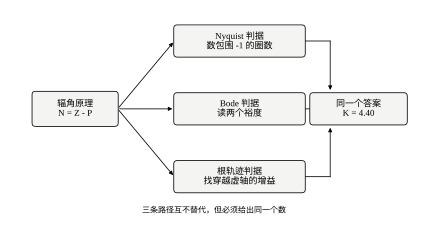
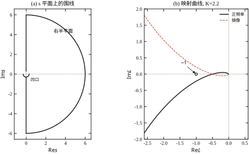
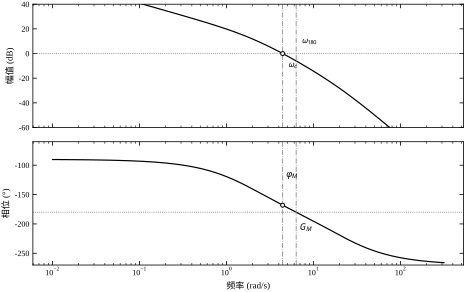
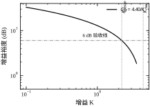
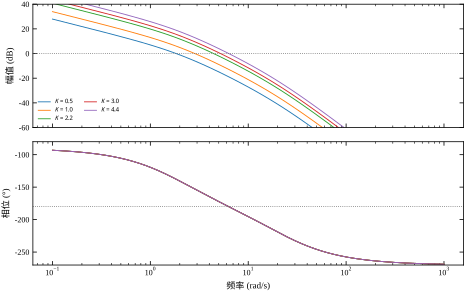
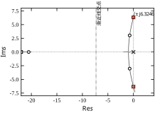
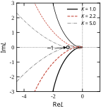
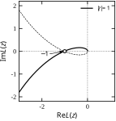
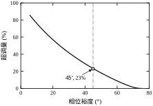
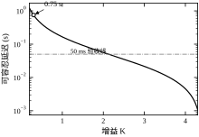

第 38 章用一组系数回答了“稳不稳”，代价是必须先有一个可靠的特征多项式。可工程现场经常拿不到它：机械共振、传动间隙、执行器非线性都难以写成阶次确定的传递函数，能测到的只有一条扫频得到的幅相曲线。Nyquist 判据正是为这种场合准备的——它只要求开环频率特性，不要求知道阶次。
更深一层的区别在答案的形态。Routh 表给的是“是/否”，Nyquist 与 Bode 给的是“还差多少”：增益裕度、相位裕度、以及曲线离 -1 点有多远。前者回答“能不能用”，后者回答“敢用多久、换一批零件还稳不稳”。
设想一台直驱伺服轴。电机与负载之间有一段联轴器，扭转刚度未知；导轨上有预紧力，摩擦力随位置变化。想列特征多项式，就得先辨识阶次、阻尼、刚度，每一项都有误差。换一条路：用信号发生器从 1 rad/s 扫到 500 rad/s，记录每个频率下的幅值比与相位差，得到 G(\mathrm{j}\omega) 的实测曲线。Nyquist 判据只吃这条曲线。
这不是“退而求其次”。实测曲线里天然含有未建模的高频模态——它们不需要被写成项，只要在曲线上出现，判据就会把它们算进去。Routh 表做不到这一点：漏掉一个环节，表里就少一行，结论可能从“不稳”翻成“稳”。
用第 38 章的三阶对象做对照。开环为
G(s)H(s)=\frac{10K}{s(s+2)(0.05s+1)} \tag{39-1}
Routh 表给出的结论是 K_{\max}=4.40。若把 K=2.2 代进去，Nyquist 给出的是一对数：相位穿越频率 \omega_{180}=6.3246 rad/s 处，开环幅值为
|GH(\mathrm{j}6.3246)|=\frac{10\times2.2}{6.3246\times\sqrt{6.3246^2+4}\times\sqrt{1+0.0025\times6.3246^2}}=0.5000 \tag{39-2}
因此增益裕度 G_M=1/0.5=2.0，即 6.02 dB。这与 Routh 的结论是同一件事的两种写法：G_M=K_{\max}/K=4.40/2.2=2.00。
差别在于，G_M=2 这句话可以直接落地——“增益再加一倍就临界”，现场听完就知道该怎么留余量；而“K_{\max}=4.40”还要工程师自己做一次除法，才知道当前离边界有多远。
Nyquist、Bode、根轨迹看起来是三套方法，其实都从辐角原理出发：一条闭合曲线在映射下的环绕圈数，等于它内部零点数与极点数之差。三个判据只是把这句拓扑学结论投影到三种坐标上。
三者的结论必须一致。不一致时，几乎总是因为某一张图上漏了环节、或者相位卷绕没有展开——这是本章 §39.11 要专门讨论的核对方法。
图 39-1 把这三条投影画成一张图。左边是共同的源头，右边三条路径各自需要不同的输入：Nyquist 要整条曲线，Bode 要两张对数坐标图，根轨迹要零极点位置。三条路径汇到同一个框里，是因为它们给出的必须是同一个临界增益；若三条路给出三个不同的数，问题一定出在输入侧，而不是判据本身。

§39.2 给出辐角原理与三个判据的严格表述；§39.3 把判据整理成可执行的步骤；§39.4 用同一组对象把 Nyquist、Bode、根轨迹各算一遍，并互相对照；§39.5 处理离散系统（单位圆上的 Nyquist 与 w 变换）；§39.6 把裕度换算成 \sigma 与 \zeta；§39.7 讨论各参数对裕度的作用；§39.8 给出整定经验；§39.9 讲延迟、右半平面零点与非最小相位对象的处理；§39.10 落到现场扫频与判据保守性；§39.11 列优缺点与适用边界；§39.12 给出代码。
与第 38 章的分工需要先说清：有可靠系数、只问“稳不稳、能加到多大”时，用第 38 章的代数判据，快且精确；只有频响、或需要裕度、或含纯延迟时，用本章的频率判据。两者不是替代关系，而是同一结论的两条独立通路——第 38 章 §38.12.3 的三组交叉核对，其中“Routh vs Bode 裕度”一组正需要本章来补全。
把 §39.1.2 的算式换成现场顺序。设备是一台直驱轴，控制器里能调的只有一个增益旋钮；没有 A、B 矩阵，也没有辨识好的传递函数，手上只有一台能扫 0.1–10 Hz 的扫频仪和一台记录仪。
扫完得到两张纸：幅频在 0.703 Hz 处穿过 0 dB，相频在同一个频率上是 -168^{\circ}；相频在 1.006 Hz 处穿过 -180^{\circ}，幅频在那一点是 -6.0 dB。把这两个频率换成角频率是 4.42 与 6.32 rad/s，与本章模型 K=2.2 那一档完全对上（表 39-2 第三行）。
于是三句话就能写完结论。第一句：增益还能再翻一倍才临界，因为 -6 dB 就是“再乘 2”。第二句：延迟只剩 47 ms 的余量，因为 11.9^{\circ} 换成弧度是 0.208，除以 4.42 得 0.047 s。第三句：限制这台设备的不是增益，是延迟——控制器里那个 20 ms 的反馈滤波单独就吃掉 5.1^{\circ}（0.020\times4.42=0.088 rad），占 11.9^{\circ} 的四成多。
这三句话的顺序值得留意。若只报“增益裕度 6 dB，合格”，听众会以为还有一倍空间可以随便用；而实际上增益翻倍之后 \omega_c 会从 4.42 升到 6.32，同样一段 47 ms 的延迟在新频率上已经值 17.0^{\circ}（0.047\times6.32=0.297 rad），比原来贵四成多。两个裕度共享同一个频率坐标，不是两个独立的数，这一点在 §39.7 还会再算一遍。
扫频读数也有它的边界：0.1 Hz 以下通常不可信（扫一个周期要十秒以上，工况早已漂移），10 Hz 以上则受激振器与采样率限制。本章的判据只需要 0 dB 与 -180^{\circ} 两个穿越点落在可信段内，这里恰好是 0.7–1.0 Hz，离两端都远，属于运气好的情形。若穿越点落在可信段的边缘，正确做法是扩频段重扫，而不是在边缘数据上做更精细的插值——插值不会凭空造出信息。
三个判据共用一块地基：辐角原理。先把这块地基说清楚，后面两个判据都只是它的坐标改写。
设 F(s) 在一条闭合围线 \Gamma 内部除有限个极点外解析、在 \Gamma 上无零点无极点。当 s 沿 \Gamma 顺时针绕行一周时，F(s) 在复平面上绕原点转过的圈数 N 满足
N=Z-P \tag{39-3}
其中 Z、P 分别是 F(s) 在 \Gamma 内的零点数与极点数（重根按重数计），N 以顺时针为正。直观理解：每个零点让映射曲线绕原点顺着走一圈，每个极点让它逆着走一圈，两者相抵后剩下的就是净值。
把这句话写成式子，就是
N=\frac{1}{2\pi}\Delta_\Gamma\arg F(s) \tag{39-3a}
\Delta_\Gamma\arg F 是沿围线走完一圈后辐角的净变化量。它必为 2\pi 的整数倍，因为曲线首尾必须闭合；而它只取决于围线内部零点与极点的个数，与围线画成什么形状无关。这一条“与形状无关”是整个判据能用的前提：实际工程里围线总是画成最方便的样子（直线加圆弧），而不是按系统真实边界画。
举一个可以手算的最小例子。取 F(s)=(s-1)/(s+2)，围线取以原点为心、半径 3 的圆。圆内有零点 1、极点 -2，故 Z=1、P=1、N=0：沿圆走一圈，s-1 的辐角增加 2\pi，s+2 的辐角也增加 2\pi，两者相减为零，映射曲线绕原点零圈。把半径缩到 1.5，极点 -2 被留在圈外，Z=1、P=0、N=1，同一条映射曲线绕原点一圈。同一个函数、同一条曲线，只因为围线换大小，圈数就变了——变的不是曲线，而是圈里装了什么。理解这一点，就不会把“数圈”误解成“看曲线形状好不好看”。
重根按重数计，这一句也不是形式上的补充。若 F 在某点有二阶零点，辐角在那里转过 4\pi 而非 2\pi，映射曲线绕原点两圈。工程上对应的是“一对重根同时进入右半平面”，Nyquist 图上表现为曲线一次穿过 -1 左侧时圈数跳 2，而不是跳 1（§39.12.3 的代码正是按这个规律设的核对）。
取 \Gamma 为包围整个右半平面的 D 形围线（沿虚轴从 -\mathrm{j}\infty 到 +\mathrm{j}\infty，再沿右半大圆弧回到 -\mathrm{j}\infty），并取
F(s)=1+L(s)=\frac{D_{cl}(s)}{D_{ol}(s)} \tag{39-4}
则 F 的零点就是闭环极点、极点就是开环极点。于是 Z 是右半平面的闭环极点数，P 是右半平面的开环极点数。闭环稳定等价于 Z=0，即
N=-P \tag{39-5}
这就是 Nyquist 判据的一般形式。P=0（开环稳定，绝大多数传动系统属于此类）时，它退化为“1+L(\mathrm{j}\omega) 的曲线不环绕原点”，也就是 L(\mathrm{j}\omega) 不环绕 -1 点。
把这套流程在本章对象 L=10K/[s(s+2)(0.05s+1)] 上走完整的一圈，可以把“数圈”从口号变成算术。D 形围线分四段，逐段看映射：
第一段，正虚轴 \omega 从 0^{+} 到 \infty。 低频时 L\approx10K/(2\mathrm{j}\omega)=-\mathrm{j}5K/\omega，模趋于无穷、相位 -90^{\circ}，曲线从负虚轴的无穷远处出发；相位随频率单调下降到 -270^{\circ}，中途在 \omega_{180}=6.3246 处穿过负实轴，落点 -0.2273K；高频时 L\approx200K/(\mathrm{j}\omega)^3，曲线从 +90^{\circ} 方向收进原点。
第二段，半径 R\to\infty 的大半圆。 在 s=Re^{\mathrm{j}\theta} 上 L\approx10K/(0.05R^{3}\mathrm{e}^{\mathrm{j}3\theta})，模按 R^{-3} 趋于零，辐角是 -3\theta。\theta 从 +90^{\circ} 走到 -90^{\circ}，辐角就从 -270^{\circ} 转到 +270^{\circ}——整整一圈半，但半径只有 10K/(0.05R^{3})，缩成一个点。它对包围圈数没有贡献，却是“曲线为什么在原点附近来回穿”的原因：三阶分母让这条曲线在原点处绕了三趟。
第三段，负虚轴。 由实系数性质 L(-\mathrm{j}\omega)=\overline{L(\mathrm{j}\omega)}，这一段是第一段关于实轴的镜像，同样在 -0.2273K 处穿过负实轴。
第四段，原点处半径 \varepsilon\to0 的小凹口。 在 s=\varepsilon\mathrm{e}^{\mathrm{j}\theta} 上 L\approx5K\mathrm{e}^{-\mathrm{j}\theta}/\varepsilon，模 5K/\varepsilon\to\infty，辐角从 +90^{\circ} 顺时针经 0^{\circ} 到 -90^{\circ}。这是一段半径无穷大的右半圆，作用是把正、负虚轴两条支路在无穷远处接起来。
四段拼成一条闭合曲线后，判稳只剩一句话：数这条闭合曲线在 -1 左侧穿过负实轴的次数。注意“闭合曲线”，不是“正频率那半条”——本章对象的正频率支路只在 \omega_{180} 处穿过一次，可镜像支路还要再穿一次，所以
最后这一条是最容易数错的地方。只画 \omega>0 的半条曲线、只数到“穿了一次”，就会得出“Z=1、只有一个不稳定根”的结论，而实算给出的是两个——因为三次多项式的复根必然成对出现，单数一个在数学上就不成立。数值上可以验证：沿整条围线累加 \arg[1+L(\mathrm{j}\omega)] 的变化量，K=1 与 K=6 的结果恰好相差 2.00 整圈，而 K=4.4 与 K=6 相差 0——越过 4.4 之后，穿越点继续左移，圈数却不再增加。这也正是 §39.12.3 里 rhp_count 与绕数核对要一起打印的原因：圈数回答“有几个”，代数判据回答“是不是”，两者必须一致。
围线沿虚轴走的那一段，正是 \omega 从 -\infty 到 +\infty 的 L(\mathrm{j}\omega)；右半大圆弧那一段，只要 L 是严格真有理分式，就映射为原点。又因为实系数传递函数满足 L(-\mathrm{j}\omega)=\overline{L(\mathrm{j}\omega)}，负频率那半条曲线是正频率曲线的镜像。所以实际只需要画 \omega 从 0 到 +\infty 的一条曲线，再对实轴做镜像。
曲线起点在 \omega=0（含积分环节时趋于无穷远，需要补一段半径无穷大的圆弧），终点在 \omega\to\infty 时落到原点。若开环在虚轴上有极点（积分环节、谐振），围线还要用半径 \varepsilon\to0 的小半圆绕开，对应曲线上补一段半径无穷大的圆弧，转向由极点重数决定。这一段最容易画错，§39.3.4 会给出逐步规则。
图 39-2 把围线与映射结果并排放。(a) 是 s 平面上的 D 形围线：沿虚轴的直线段、右半平面的大圆弧，以及原点处为绕开积分环节而挖的小凹口；(b) 是 K=2.2 时映射出来的曲线，黑色实线是正频率段，红色虚线是它的镜像，空心圈标出临界点 -1。整条曲线落在 -1 的右侧，说明不包围，闭环稳定——这就是辐角原理在一张图上的一次具体兑现。

把 L(\mathrm{j}\omega) 写成 |L|\mathrm{e}^{\mathrm{j}\varphi}，Nyquist 曲线在极坐标下的两个分量就分别是 Bode 图的幅频与相频。对 P=0 的最小相位系统，“不环绕 -1”等价于两条更易读的条件：
两个条件的余量分别是相位裕度与增益裕度
\varphi_M=180^{\circ}+\varphi(\omega_c),\qquad G_M=\frac{1}{|L(\mathrm{j}\omega_{180})|} \tag{39-6}
G_M 常以 dB 表示：20\lg G_M。P\ne0 时这两个不等式不再是充分条件——此时必须回到“数圈数”，Bode 图只能作为辅助。这一点在磁悬浮、倒立摆这类开环不稳定的对象上会直接决定结论对错，§39.9 给出例子。
这两条为什么与“不包围”等价？先把它们翻译成几何语言。在 \omega_c 处相位高于 -180^{\circ}，说的是曲线穿过单位圆时还在负实轴的上方；在 \omega_{180} 处幅值小于 1，说的是曲线穿过负实轴时还在单位圆以内。两种说法都在描述同一件事：曲线是从 -1 的内侧绕过去的。在幅频只穿 0 dB 一次、相频只穿 -180^{\circ} 一次的前提下，“谁先谁后”只有两种可能，恰好一一对应“包围”与“不包围”。
“只穿一次”是前提，不是结论。若相位在 \omega 增大过程中三次越过 -180^{\circ}（多段滞后叠加时很常见），两个裕度只反映离 -1 最近的那一次，其余两次穿越仍然可能把 -1 圈进去；此时 Bode 上的“裕度为正”就会给出错误结论。判据的完整形式始终是数圈，两个裕度只是它在“单次穿越”这一特殊情形下的简化读数。
另一个前提是最小相位，即开环没有右半平面零点。右半平面零点不改变幅频，却把相位往下拖，于是“幅值多大”与“相位多少”之间不再有一一对应；Nyquist 图上曲线会多绕一个弯，包围关系仍然数得清，但靠两个裕度已经判不了。§39.9.2 给出一个“幅频看着很安全、相位其实已经越线”的例子。把这三条前提合起来说：P=0、最小相位、单次穿越，三者同时成立时，“两个裕度都为正”才是稳定的充分条件；缺一条，就要回到 Nyquist 图。
用本章对象的两个工作点把这条等价关系验一遍，可以看清“谁先谁后”到底在说什么。K=2.2 时，曲线在 \omega_c=4.42 处穿过单位圆，那一刻相位是 -168.2^{\circ}，还在负实轴上方 11.8^{\circ}；继续升频，曲线进入第三象限，在 \omega_{180}=6.32 处落到 -0.5。先到单位圆、后到负实轴，而且到负实轴时已经在圆内，这就是“从 -1 内侧绕过”的完整描述。换成 K=5：曲线在 \omega_c=6.74 处才穿过单位圆，此时相位已经是 -182.1^{\circ}，也就是先到负实轴、后到单位圆，穿越点落在 -1.136，-1 被圈在里面。注意这时两个穿越的次序也颠倒了：\omega_{180}=6.32 反而小于 \omega_c=6.74，而 K=2.2 时是 \omega_c=4.42<\omega_{180}=6.32。
这两个工作点的差别只在“两个穿越的先后”，而先后又等价于“相位裕度与增益裕度的正负号”。所以 Bode 上的两条不等式不是 Nyquist 的近似，而是它的另一种记法——在同一条曲线上换了个坐标读数。真正需要小心的是这个等价关系的三个前提，而不是不等式本身。
闭环特征方程为 1+KG(s)=0，把 K 看作参数，根随 K 变化的轨迹就是根轨迹。由 KG(s)=-1 拆出两个条件：
|G(s)|=\frac{1}{K},\qquad \angle G(s)=(2k+1)\cdot180^{\circ} \tag{39-7}
相角条件与 K 无关，它决定了轨迹的形状；幅值条件决定了某个点对应哪个 K。判稳只需看轨迹是否穿过虚轴：穿越点由 s=\mathrm{j}\omega 代入特征方程解出，得到临界频率 \omega_{osc} 与临界增益 K_{\max}——这正是第 38 章 §38.2.5 用辅助多项式所做的同一件事。
k 取遍所有整数，所以相角条件是“180^{\circ} 的奇数倍”，而不是“等于 180^{\circ}”。这一点在画图时很实用：从实轴上的极点出发，出射方向由该点处所有零极点贡献的相角之和补足到 180^{\circ} 决定；从共轭复极点出发时，出射角要减去共轭伙伴的贡献，得到的往往不是 90^{\circ}，而是 90^{\circ} 加减一个修正量。手画根轨迹时最先画错的就是这个出射角。
轨迹的条数等于开环极点数 n。当 K\to\infty 时有 n-m 条支路趋向无穷远（m 是零点数），它们沿 n-m 条渐近线离开，渐近线与正实轴的夹角为 (2k+1)180^{\circ}/(n-m)，交点在 \sigma_a=(\sum p_i-\sum z_i)/(n-m)。本例 n=3、m=0，故三条渐近线、夹角 \pm60^{\circ} 与 180^{\circ}、交点 -7.33——这三个数在 §39.4.3 会直接用到。
根轨迹判据最擅长回答的是“改哪个参数能把根拉回来”。若轨迹整体留在左半平面（例如二阶对象加一个左半零点），则任意增益都稳定，此时 Bode 上的增益裕度为无穷，与根轨迹的结论一致；反之若某条支路一开始就在右半平面（开环不稳定），则必须先把增益降到某个下界以下才能稳定，这个下界在根轨迹上表现为“轨迹从右半平面进入左半平面”的那一点。
表 39-1 三种判据的输入、输出、前提与强项
| 判据 | 输入 | 输出 | 前提 | 强项 |
|---|---|---|---|---|
| Nyquist | 开环 L(\mathrm{j}\omega) 的完整曲线 | 包围圈数 N | 只需频响，可有纯延迟 | 处理 P\ne0、延迟、非最小相位 |
| Bode | 幅频与相频两张图 | G_M、\varphi_M | 最小相位、单次穿越 | 现场扫频直接可用，裕度直观 |
| 根轨迹 | 开环零极点 | 根随 K 的轨迹 | 需已知零极点 | 看清“根往哪儿跑”，指导补偿设计 |
三者互为校验：同一对象用三种方法算出的 K_{\max} 应当在数值精度内一致。若不一致，先查相位是否连续展开（\pm360^{\circ} 卷绕）、再查是否漏画了无穷远圆弧。
表里三列的差别可以归到一句话：输入决定“能用在什么场合”，输出决定“能回答什么问题”。Nyquist 要整条曲线，输入最贵，输出也最完整；Bode 是它的极坐标拆分，信息量相同，只是把“距离与方位”换成了“幅值与相位”两张图，读数更方便但前提更多；根轨迹只要零极点，输入最便宜，输出是“根随 K 的走向”，天生适合指导设计。
按这个顺序看，三者的角色分工很清楚：Nyquist 用来“判”，根轨迹用来“改”，Bode 夹在中间。判的时候不怕麻烦，宁可回到复平面数圈；改的时候要的是“零点放在哪里轨迹会左移”，那只有根轨迹答得出。Bode 之所以成为工程默认，是因为它两头都能凑合：既能读裕度（判），又能看出“抬哪一段幅频能补相位”（改）。
三者对不上时的排查也有优先级。Bode 与 Nyquist 描述的是同一条曲线，两者矛盾说明读数或画法出了问题（展开、圆弧、坐标），属于“低层错误”；根轨迹走的是另一条路径（多项式求根），与前两者矛盾才可能是模型或前提的问题（P\ne0、非最小相位、条件稳定）。先修低层错误，再怀疑前提——反过来做，往往会把一条正确的曲线改错。
频率判据的手算比 Routh 表“轻”，但比它更容易在细节上出错：相位少展开一圈、无穷远圆弧画反方向，都会让结论刚好相反。下面六步把容易出错的地方逐一固定下来。
把开环整理成
L(s)=K\,\frac{\prod_i(1+T_is)}{\prod_j(1+\tau_js)}\cdot\frac{1}{s^{m}} \tag{39-8}
的因式形式，然后数右半平面极点个数 P。三个要点：积分环节 s^{m} 的极点落在虚轴上，不计入 P，但它会产生无穷远圆弧（第四步处理）；只有分母里出现 1-Ts（T>0）这种“负号时间常数”，才意味着一个右半极点，写成 1+Ts 的都是左半极点；纯延迟 e^{-T_ds} 是超越函数，既无极点也无零点，P 仍按有理部分数——但若用 Padé 近似代入，会引入右半平面零点，“最小相位”这个前提就没了，Bode 判据随之失效（§39.9）。
幅频用 \mathrm{dB}、频率用对数坐标；相频要连续展开，即把每个环节的 \pm360^{\circ} 跳变接上。判断 -180^{\circ} 穿越时，未展开的相位会在穿越点附近来回跳，看上去像“穿了好几次”，实际只有一次。
手算时可以用斜率法粗画：每个一阶极点在其转折频率之后贡献 -20 dB/十倍频与 -90^{\circ}；每个积分环节从起点就贡献 -20 dB/十倍频与 -90^{\circ}。本例 L=22/[s(s+2)(0.05s+1)] 的转折频率是 2 与 20 rad/s，幅频斜率依次是 -20、-40、-60 dB/十倍频，相位依次趋近 -90^{\circ}、-180^{\circ}、-270^{\circ}。
斜率法还能给出一个“量级感”：\omega=1 时 |L|=22/(1\times2.236\times1.001)\approx9.83，即 19.9 dB；到 \omega=10 时已经降到 22/(10\times10.2\times1.12)\approx0.19，即 -14 dB。从 +19.9 dB 掉到 -14 dB，跨两个十倍频共掉 34 dB，平均斜率约 -17 dB/十倍频——比 -20 略缓，因为转折频率 2 与 20 之间还有一段过渡区。这组数不用精确，它的用途是让你在拿到扫频曲线时能一眼判断“这条曲线是不是我要的对象”：若实测在 \omega=10 处还有 0 dB，说明模型少算了一个极点。
相位也能这样逐项核对。本例 \omega=0.2 rad/s 时，三个环节的相角分别是 -90^{\circ}、-\arctan(0.1)=-5.71^{\circ}、-\arctan(0.01)=-0.57^{\circ}，加起来 -96.28^{\circ}，与频响函数在该频率给出的读数一位不差。相位是各环节相角的代数和，没有“耦合修正”——这一点与幅值不同：幅值要连乘，取 dB 后才能相加，所以幅频的斜率法只在转折频率之间才严格成立。
手算时先列一张“环节—相角”表逐项相加，比整体套 \arctan 公式更不容易漏项，尤其在含右半平面零点的时候：那种环节的相角是 -180^{\circ}+\arctan，符号写反会让整条相位曲线翻转，而幅频看起来毫无异常（§39.9.2 就是这么被骗的）。
\omega_c 由 |L(\mathrm{j}\omega)|=1 解出，\omega_{180} 由 \varphi(\omega)=-180^{\circ} 解出（多圈时取所有解）。本例相位穿越点可以解析求出：令两个滞后环节的相角之和为 90^{\circ}，即 \arctan(\omega/2)+\arctan(0.05\omega)=90^{\circ}，两边取正切得 \omega^2\cdot0.05/2=1，故
\omega_{180}=\sqrt{40}=6.3246\ \mathrm{rad/s} \tag{39-9}
这正是第 38 章式 (38-20) 的 \sqrt{a_0/a_2} 在 K=K_{\max} 处的值，两条路径给出同一个频率。
\omega_c 没有闭式解，但手算两次就能收敛到三位有效数字。先猜 \omega=4：|L|=22/(4\times4.472\times1.020)=22/18.24=1.206，即 +1.63 dB，偏大；再猜 \omega=5：22/(5\times5.385\times1.031)=22/27.76=0.793，即 -2.02 dB，偏小。在两点间按 dB 线性内插得 \omega\approx4+1.63/(1.63+2.02)=4.45；代回算一次得 -0.09 dB，略偏小，再挪回一点就是 4.42。三步之内收敛，误差 0.2\%，比直接用计算器解方程更不容易按错键。
这段迭代值得单独说一句，因为它暴露了一个常被忽略的事实：\omega_c 是“算出来”的，\omega_{180} 往往是“解出来”的。前者依赖幅值，幅值随 K 变，所以每换一档增益都要重算；后者只依赖相位，而增益不进相位，所以对同一结构只算一次。表 39-2 里五档增益共用一个 6.3246，却各有各的 \omega_c，原因就在这里。
图 39-3 是 K=2.2 时的 Bode 双图。上图的 0 dB 线与幅频交于 \omega_c=4.42，下图对应位置的相位是 -168.2^{\circ}，与 -180^{\circ} 的差就是相位裕度 11.9^{\circ}；下图的 -180^{\circ} 线与相频交于 6.32，上图对应位置的幅值是 -6.0 dB，取绝对值就是增益裕度。两条竖虚线一个来自幅值条件、一个来自相位条件，把“两个穿越”的位置钉在了同一张时间轴上。

对 s^{m} 型极点，围线在原点处要用半径 \varepsilon\to0 的小半圆从右侧绕过，映射到 L 平面上是半径 \infty 的大圆弧，顺时针转过 m\cdot180^{\circ}。以 L=K/[s(s+2)] 为例：\omega\to0^{+} 时 L\approx K/(2\mathrm{j}\omega)，相位 -90^{\circ}、模无穷；补的圆弧从 +90^{\circ} 顺时针经 0^{\circ} 落到 -90^{\circ}，把起点和终点接起来。
这一段画错的方式很固定：把顺时针画成逆时针，等价于凭空多算一次环绕，结论就从“稳”变成“不稳”。检验办法是看曲线是否与负实轴相交——对 1/s 型对象，只有把圆弧画对，曲线才会从第三象限进入第二象限。
为什么一定是顺时针？围线在原点处是从负虚轴一侧绕过小半圆到正虚轴一侧的，s=\varepsilon\mathrm{e}^{\mathrm{j}\theta} 中 \theta 从 -90^{\circ} 逆时针走到 +90^{\circ}；但 L 在原点附近的行为是 1/s^{m}，取倒数会把辐角整体翻号，于是 \theta 的逆时针变成相位的顺时针。记住这个“取倒数翻方向”的机制，比背结论可靠：m=1 时圆弧是半圈，m=2 时是一整圈（双积分对象），m=3 时是一圈半，方向始终顺时针。
P=0 时，曲线不包围 -1 即稳定；有包围时按 Z=N+P 数出右半平面闭环极点数。判断“是否包围”有一个免争议的做法：从 -1 点向右作一条射线，数曲线穿过它的次数（带方向），比目测圈数可靠。
射线法的好处是把二维的“绕圈”降成一维的“穿越计数”：曲线自下而上穿过射线记 +1，自上而下记 -1，代数和就是圈数（符号按本节“顺时针为正”的约定取）。曲线自交、局部打结都不影响计数，因为射线只在一处开口。代价是要选对射线方向——必须从 -1 向右，若向右的射线恰好与曲线相切，换一个略微倾斜的方向重数即可。
随后做两项核对：把 G_M 换算成临界增益，与第 38 章的 K_{\max} 对照；把 \omega_{180} 与代数判据给出的 \omega_{osc} 对照。本例 K=2.2 时 |L(\mathrm{j}6.3246)|=0.5，故 G_M=2.00（6.02 dB），对应的临界增益为 2.2\times2.00=4.40，与 Routh 表的结果完全一致。
这两项核对的分工要说清：\omega_{180} 核对的是结构，它只与零极点位置有关，增益抄错也查不出来；G_M 换算核对的是增益，它把 4.40/K 这条反比关系验一遍。两者一起做，才能同时排除“对象写错”与“增益抄错”两类错误。若 \omega_{180} 对得上而换算出的 K_{\max} 对不上，几乎一定是 K 的位置代错了——比如把 10K 写成了 K。
记录 P、\omega_c、\omega_{180}、G_M、\varphi_M，以及一句“哪个穿越是决定性的”。多条穿越时，只有最靠近 -1 的那一条决定裕度，其余穿越虽然也满足幅值条件，却不构成威胁；把它们一并列出，是为了在参数变化时能看出“下一次先出问题的是哪一条”。
归档格式沿用 §38.3.7 的“可复算的一行”：结构 → 系数或频响来源 → 两个穿越频率 → 两个裕度 → 当前工作点。字段与第 38 章对齐，评审时可以在两章之间直接对照。本例的一行是：
三阶（积分 + 一阶 + 执行器滞后）→ 系数 [0.05,\ 1.1,\ 2,\ 10K] → \omega_c=4.42、\omega_{180}=6.3246 → G_M=6.02 dB、\varphi_M=11.9^{\circ} → K=2.2。
下一轮改参数时只换最后一列，前四项就能立刻告诉你“是变好还是变坏”。若频响来自实测而非模型，还要在“频响来源”一栏写清激励幅值、扫频范围与相干函数门限，否则半年后无法判断这条曲线是在什么工况下测的。
六步都走完，结果不一定对。出现下面三种情况时，不要急着重算，先按分支定位是哪一步出了问题。
分支一：算出的 K_{\max} 与 Routh 表不符。 先查第一步与第二步是否用了同一个对象——最常见的原因是“因式形式”与“多项式系数”手工转录时抄错了一个数（比如把 10K 写成 K）。其次是查第四步的无穷远圆弧有没有漏：积分环节少补半圈，包围圈数会差一整圈，边界增益可能差几倍。最后才怀疑数值精度。顺序不能反：多数人一上来就怀疑算法，实际上八成的错在转录。
分支二：找不到 \omega_{180}。 有两种可能，必须分清。其一，相位根本没有到 -180^{\circ}（例如二阶对象只到 -180^{\circ} 而不穿越），此时 G_M=\infty 是正确答案，不是程序出错；判据仍然有效，只说明“增益加大不会因增益而失稳”。其二，相位到了但被卷绕掩盖，[-180^{\circ},180^{\circ}] 的折返让曲线在图上“跳”过穿越点——这时把相位连续展开，G_M 立刻出现。区分方法很直接：看 \omega\to\infty 时相位的极限值，若它大于 -180^{\circ}，属于第一种；若小于，属于第二种。
分支三：Bode 说稳、根轨迹说不稳。 三个判据给出矛盾结论时，几乎一定是某个前提被破坏了：要么对象有右半平面零点（相位与幅频脱钩），要么相位多次穿越（裕度只反映最近一次），要么 P\ne0（裕度判据不充分）。按 §39.9.7 的五步顺序查一遍，通常在前三步就能找到原因。三个判据互相矛盾不是“方法有争议”，而是“输入信息不足以支撑结论”的明确信号。
这三个分支合起来说明一件事：六步流程的价值不在“算得快”，而在“错了能定位”。Routh 表算错时，你只知道结果不对；频率法算错时，图上的形状会告诉你错在哪一步。
本节把 §39.3 的六步在同一组对象上走两遍：先看纯二阶，再看加了执行器滞后的三阶。两遍的区别恰好说明“增益裕度”与“相位裕度”为什么会给出不同强度的结论。
对象 L=10K/[s(s+2)]，K=1 时由 |L(\mathrm{j}\omega)|=1 得
\omega^4+4\omega^2-100=0\ \Longrightarrow\ \omega_c=\sqrt{8.198}=2.863\ \mathrm{rad/s} \tag{39-10}
相位为 -90^{\circ}-\arctan(\omega_c/2)=-90^{\circ}-55.1^{\circ}=-145.1^{\circ}，故 \varphi_M=34.9^{\circ}。而相位要到 \omega\to\infty 才逼近 -180^{\circ}，全程不穿越，所以 \omega_{180} 不存在，G_M=\infty。
式 (39-10) 的推导只有一步：把 |L(\mathrm{j}\omega)|=1 写成 \omega\sqrt{\omega^2+4}=10K，两边平方得 \omega^2(\omega^2+4)=100K^2，再令 x=\omega^2，得二次方程 x^2+4x-100K^2=0。取正根
x=-2+\sqrt{4+100K^2} \tag{39-10a}
K=1 时 x=-2+\sqrt{104}=8.198，开方即 2.863。这个式子说明 \omega_c 随 K 单调上升，而且当 K 很大时近似 \omega_c\approx\sqrt{10K}——增益每增大 10 倍，带宽只增大 \sqrt{10}\approx3.16 倍。
“G_M=\infty”的数学原因是相位只到 -90^{\circ}-90^{\circ}=-180^{\circ} 而永远取不到：\arctan 是开区间上的函数，\omega\to\infty 时它趋于 90^{\circ} 但不等号成立。工程含义是：这台设备无论增益开多大都不会“因增益而发散”——注意限定词，它仍可能因延迟、因未建模的高频极点、因饱和而失稳。把 G_M=\infty 读成“绝对安全”是这一节最常见的误读。
同一组数还能读出延迟容忍：\varphi_M=34.9^{\circ}=0.609 rad，除以 \omega_c=2.863，得 T_{d,\max}=0.213 s。也就是说，纯二阶对象对延迟的容忍度并不比三阶宽多少——三阶在 K=2.2 时只有 47 ms，二阶在 K=1 时有 213 ms，看上去差四倍，但别忘了三阶那一档的增益是二阶的 2.2 倍，带宽也高得多（4.42 对 2.86）。按“延迟容忍与带宽成反比”这条规律，差距本应更大；之所以只差四倍，是因为二阶的相位裕度本身也更小。
这条结果与第 38 章“二阶没有上限”完全对应：G_M=\infty 就是那句话的频率版。但要注意，\varphi_M 只有 34.9°，并且随 K 增大继续下降——K=4.4 时 \omega_c 升到 6.48 rad/s、\varphi_M 降到 17.2^{\circ}，而 G_M 仍是无穷。增益裕度无穷不代表系统“很安全”，它只说明“再加多少倍增益都不会发散”，而相位裕度说明的是“再加多少延迟就会发散”。两个指标量的是不同的东西，这也是 §39.1 开头强调“答案形态”的原因。
加上 50 ms 执行器滞后后，L=10K/[s(s+2)(0.05s+1)]。相位穿越频率与增益无关（式 39-9 已给出 \omega_{180}=6.3246 rad/s），所以
G_M=\frac{1}{|L(\mathrm{j}6.3246)|}=\frac{44.0}{10K}=\frac{4.40}{K} \tag{39-11}
是一条精确的反比关系。K=4.40 时 G_M=1（0 dB），与 Routh 的边界重合；K=2.2 时 G_M=2.00（6.02 dB）。
式 (39-11) 里的 44.0 不是凑出来的，它就是 |L(\mathrm{j}6.3246)| 在 K=1 时的分母：
|s(s+2)(0.05s+1)|_{\omega=6.3246} =6.3246\times\sqrt{40+4}\times\sqrt{1+0.1} =6.3246\times6.6332\times1.0488=43.99
所以 |L|=10/43.99=0.2273，与第 38 章 §38.4.5 提到的“边界频率处开环幅值 0.2273”是同一个数。K 线性地进分子，分母不动，于是 |L|\propto K，取倒数就是严格反比。任何“增益裕度与增益成反比”的结论，背后都必然有一条“相位穿越频率与增益无关”的性质——这条性质只在相位穿越由固定零极点决定、而增益不进相位时才成立，遇到纯延迟对象（相位与 \omega 成正比）也成立，遇到增益进相位的对象（如某些非线性环节）就不成立。
图 39-4 把这层反比画在对数坐标上：横轴是 K，纵轴是 G_M 的 dB 值，曲线是一条斜率 -20 dB/十倍频的直线。之所以在对数坐标下是直线，正是因为 20\lg(4.40/K)=20\lg4.40-20\lg K，K 每翻十倍，纵坐标固定下降 20 dB。图中两条竖线分别标出设计工作点 K=2.2 与边界 K=4.40，6 dB 的验收线在 K\approx2.2 处与曲线相交——这不是巧合，而是 6 dB 恰好对应“增益还能翻一倍”。

\varphi_M 需要解 |L(\mathrm{j}\omega_c)|=1，没有闭式解，只能数值求。五档结果列于表 39-2，\omega_c 与 \varphi_M 的有效数字取三位，由 §39.12 的 bode_margins 复算。
表 39-2 三阶对象的两个裕度随增益的变化
| K | \omega_c (rad/s) | \varphi_M (°) | G_M (dB) | K/K_{\max} |
|---|---|---|---|---|
| 0.50 | 1.83 | 42.3 | 18.9 | 0.11 |
| 1.00 | 2.85 | 27.0 | 12.9 | 0.23 |
| 2.20 | 4.42 | 11.9 | 6.0 | 0.50 |
| 3.00 | 5.21 | 6.4 | 3.3 | 0.68 |
| 4.40 | 6.32 | 0 | 0 | 1.00 |
表里最值得记的是最后两列的关系：G_M 与 K/K_{\max} 是倒数关系，K 翻倍，G_M 掉 6 dB；而 \varphi_M 下降得更快——K 从 1 增到 2.2（2.2 倍），G_M 从 12.9 dB 降到 6.0 dB（正好 6.9 dB），\varphi_M 却从 27.0° 掉到 11.9°（去掉 56%）。在同一组参数上，相位裕度是比增益裕度更灵敏的“距离指示”，原因是它同时受增益与频率两个因素影响。
\omega_c 自身还能用一个粗式估。当 \omega_c 越过第一个转折频率 2 rad/s 之后，|L|\approx10K/\omega^2，令其为 1 得
\omega_c\approx\sqrt{10K} \tag{39-11a}
K=2.2 给 4.69（实算 4.42，高 6\%），K=4.4 给 6.63（实算 6.32，高 5\%），K=1 给 3.16（实算 2.85，高 11\%）；到 K=0.5 时给 2.24，实算只有 1.83，高 22\%——因为那一档的穿越点还没越过转折频率 2，\omega^2 近似不成立。这个式子只在 \omega_c 高于所有低转折频率时可用，而“高出多少”决定了误差是 5\% 还是 20\%。
它给出的信息比数值更有用：\omega_c 与 \sqrt{K} 成正比，增益翻四倍、带宽才翻一倍。这是“单积分 + 惯性环节”这类对象的共同规律，也是“提增益换带宽”效率不高的根源——想让带宽翻倍，得把增益开四倍，而四倍增益通常已经把相位裕度吃光了。
图 39-5 把五档增益的曲线画在一起，可以看清这种“灵敏度差异”从何而来。相频曲线只有一条——增益不进相位，五档完全重合，所以 -180^{\circ} 的位置钉死在 6.32；幅频曲线则是五条互相平行的曲线，K 每增大一倍整体上移 6 dB。相位裕度是“0 dB 线与相频交点处的相位差”，交点随 K 增大向右滑，而相位曲线在这一段正在快速下降，两个因素叠加，\varphi_M 就掉得比 G_M 快。K=4.40 时五条幅频中的最上面一条恰好与相频同时到达那个交点，两个裕度一起归零。

特征方程为
s(s+2)(0.05s+1)+10K=0.05s^3+1.1s^2+2s+10K=0 \tag{39-12}
三个起点是 0、-2、-20；三条渐近线交于 \sigma_a=(0-2-20)/3=-7.33，与正实轴夹角 \pm60^{\circ}、180^{\circ}。令 s=\mathrm{j}\omega 代入，实部与虚部分别为零：
-1.1\omega^2+10K=0,\qquad -0.05\omega^3+2\omega=0 \tag{39-13}
第二式给出 \omega^2=40（或 \omega=0），即 \omega_{osc}=6.3246 rad/s；代回第一式得 K_{\max}=1.1\times40/10=4.40。三个判据在同一组数上会合：代数判据给出 4.40，频率判据给出 G_M=4.40/K，根轨迹给出穿越点 \pm\mathrm{j}6.3246。
代入过程值得写全，因为它是本章唯一一次“复数乘法决定结论”的地方。先把 s=\mathrm{j}\omega 代入前两个因子：
(\mathrm{j}\omega)(\mathrm{j}\omega+2)=-\omega^2+2\mathrm{j}\omega
再乘第三个因子 (1+0.05\mathrm{j}\omega)：
(-\omega^2+2\mathrm{j}\omega)(1+0.05\mathrm{j}\omega) =(-\omega^2-0.1\omega^2)+\mathrm{j}(2\omega-0.05\omega^3) =-1.1\omega^2+\mathrm{j}(2\omega-0.05\omega^3)
加上 10K 后，实部是 10K-1.1\omega^2、虚部是 2\omega-0.05\omega^3，正是式 (39-13) 的两条。虚部方程里没有 K，所以它单独定出 \omega；实部方程再把 \omega 换算成 K。这个“虚部定频率、实部定增益”的分工，与第 38 章“整行为零时先由辅助多项式定 \omega_{osc}、再由增益关系定 K_{\max}”是同一套逻辑，只是这里用的是复数而不是行列式。
图 39-6 是同一组根的轨迹。三个起点 0、-2、-20 都在实轴上，随着 K 增大，中间那条支路与左边那条支路相向而行，在实轴上某点相遇后分裂成一对共轭复根，向上、向下各走一条弧线，最终在 K=4.40 时同时到达 \pm\mathrm{j}6.3246。虚线标出渐近线交点 -7.33，三条渐近线以 \pm60^{\circ} 与 180^{\circ} 散开；曲线在穿越点之后继续向右，实部为正，系统失稳。这张图回答的是“根往哪儿跑”，而前两张图回答的是“离边界多远”，两者互补。

Nyquist 曲线在 K=2.2 时的走向是：\omega\to0^{+} 时 L\approx11/(\mathrm{j}\omega)，从负虚轴方向的无穷远处出发；补的那段无穷大圆弧在右半平面从 +90^{\circ} 顺时针扫到 -90^{\circ}，把起点与负频率侧的镜像接上；随后主线进入第三象限，随 \omega 增大顺时针绕行，在 \omega=6.3246 处穿过负实轴于 -0.5，再进入第二象限并趋于原点。曲线与负实轴的交点就是 G_M 的倒数位置，离 -1 尚有一倍距离。
Bode 图上则是：幅频在 \omega_c=4.42 处穿过 0 dB，相频此时为 -168.2^{\circ}，两者之差 11.9° 就是相位裕度；相频在 6.32 处穿过 -180^{\circ}，此时幅频为 -6.0 dB。根轨迹图上，三个极点随 K 增大向虚轴靠拢，在 K=4.40 时成对到达 \pm\mathrm{j}6.3246。
三张图上的三个读数可以互相换算，这一点值得单独验一次。Nyquist 的负实轴交点在 -0.2273K：K=1 时 -0.2273、K=2.2 时 -0.500、K=4.4 时 -1.000，三个数在同一张图上就是“点离 -1 还有多远”。把这个距离取倒数，得到 4.40/K，正是 Bode 的增益裕度（1/0.2273=4.399，与 4.40 差在四舍五入）。再令这个倒数等于 1，解出 K=4.40，就是根轨迹上轨迹触到虚轴的增益。一个几何距离、一个 dB 数、一个增益值，三者只差一次取倒数和一次取对数。
三张图的读数必须能互相解释：Nyquist 上离 -1 的距离、Bode 上两个裕度、根轨迹上离虚轴的距离，是同一个量的三种度量。任何一张读不出来，都说明那张图画错了，而不是“方法不适用”。
图 39-7 把三档增益的 Nyquist 曲线叠在一张图上。K=1 时曲线缩在最内侧，离 -1 很远；K=2.2 时曲线放大 2.2 倍，负实轴交点移到 -0.5；K=5 时交点越过 -1，曲线把 -1 圈在里面，系统失稳。三档曲线形状完全相同、只是尺寸不同，这正是“增益不进相位”的几何表现——增益只缩放曲线，不改变它的形状，所以判断稳定性就退化成判断“缩放后的曲线能否盖住 -1”。

图 39-7 里三条曲线形状完全相同，这句话可以说得更硬：L 对 K 是线性的，K 从 1 变到 5 只是把曲线上的每个点沿原点方向拉长 5 倍，形状严格不变。判稳因此退化成“这条固定形状的曲线，放大多少倍会盖住 -1”。
按频率标上刻度，K=2.2 那条曲线可以分成三段。低频段几乎竖直：\omega=0.2 时落在 -5.99-\mathrm{j}54.40，\omega=0.5 时 -5.69-\mathrm{j}20.56，实部只挪了 0.3，虚部缩了一半多。中频段开始拐弯：\omega=2 时 -3.00-\mathrm{j}2.45，\omega=3 时 -1.82-\mathrm{j}0.86，\omega=4.42 时 -0.98-\mathrm{j}0.21——这一段离 -1 最近。高频段穿过负实轴后进入第二象限：\omega=6.32 时恰好落在 -0.500，\omega=10 时 -0.186+\mathrm{j}0.051，\omega=20 时 -0.030+\mathrm{j}0.025，以原点为极限，相位从 -180^{\circ} 继续走向 -270^{\circ}。
低频段为什么不贴着虚轴，而是偏在左侧一条竖线上？把 \omega\to0 展开就能看出来。分母里两个一阶因子在小 \omega 时近似为 2(1+\mathrm{j}0.55\omega)，于是
L\approx\frac{10K}{2\mathrm{j}\omega}\,(1-\mathrm{j}0.55\omega)=\frac{5K}{\mathrm{j}\omega}-2.75K \tag{39-10b}
第一项是纯虚的积分项，第二项是一个负实数偏移。K=2.2 时 -2.75K=-6.05，与 \omega=0.2 实测的 -5.99 只差 0.06；K=5 时 -13.75 对 -13.61。所以那条竖线是 x=-2.75K，不是 x=0。“Nyquist 曲线从负虚轴无穷远处出发”这句话只在纯积分对象上对：多一个惯性环节，曲线落到有限幅值时就整体左移了一个与 K 成正比的量。这也是 §39.3.4 补的圆弧必须从 +90^{\circ} 一路顺时针扫到 -90^{\circ} 的原因——它在无穷远处接上起点，而曲线一旦进入有限幅值区，就已经站在 x=-2.75K 上了。
三段里真正决定稳定性的是中频段。把曲线上每一点到 -1 的距离都算出来取最小值：K=1 时最近点在 \omega=3.25、距离 0.402；K=2.2 时在 \omega=4.61、距离 0.191；K=5 时在 \omega=6.71、距离 0.035。三个最近点都落在各自的 \omega_c 附近（2.86、4.42、6.74），而不是落在 \omega_{180} 上——\omega_{180} 只是“曲线与负实轴的交点”，并不是“离 -1 最近的点”。两者在低增益时差得很远：K=1 时负实轴交点在 -0.227，离 -1 有 0.773，而真正最近处只有 0.402，差近一倍。
这三个距离取倒数就是灵敏度峰值 M_s（§39.9.4）：1/0.402=2.49、1/0.191=5.24、1/0.035=28.3，与 §39.9.4 表中 K=1 与 K=2.2 两行的 2.488、5.242 对得上。读 Nyquist 图时，先找视觉上离 -1 最近的那一段，再去读它的频率，比先找负实轴交点更接近真相；增益裕度回答的是“再乘多少倍会碰线”，而最近距离回答的是“整条曲线最贴近 -1 到什么程度”，后者才是曲线的保守程度。
把 K=1 时二阶与三阶的两组数并排，能看清“执行器滞后”这笔账到底记在哪里。
| 对象 | \omega_c | \varphi_M | G_M | 超调 |
|---|---|---|---|---|
| 10/[s(s+2)] | 2.863 | 34.9^{\circ} | \infty | 35.1% |
| 10/[s(s+2)(0.05s+1)] | 2.846 | 27.0^{\circ} | 12.87 dB | 46.1% |
第一眼看上去几乎是同一个系统：穿越频率只差 0.6\%，幅频在 0–3 rad/s 上几乎重合。可相位裕度掉了 7.9^{\circ}，增益裕度从无穷直接掉到 12.87 dB，超调涨了 11 个百分点。这三个恶化都来自同一个 20 rad/s 的极点，而它离 \omega_c 有五倍多。
账可以算得很细。新极点在 \omega_c=2.846 处贡献的相位是 -\arctan(2.846/20)=-8.1^{\circ}，与实测的 7.9^{\circ} 只差 0.2^{\circ}（差在 \omega_c 自己也挪了一点）；而 G_M 之所以从无穷变有限，是因为总相位现在能走到 -180^{\circ} 了，穿越点被新极点钉在 \sqrt{40}=6.32。“相位裕度掉 8°”是局部账，“增益裕度从无穷变有限”是定性变化——后者不能用量来比，它意味着系统从此有了一个“开到多大就振”的明确上限。
这就是 §39.7.3 那条经验的分量：判断一个新环节贵不贵，先看它的转折频率与 \omega_c 的比值，再看它有没有把相位推过 -180^{\circ}。前一件事决定 \varphi_M 掉多少，后一件事决定 G_M 还有没有意义。本例的极点两件事都做了，所以它是本章最贵的一个参数。
数字控制器里，判据的形状不变，“包围”的对象换了：从包围右半平面变成包围单位圆外。随之而来两个新问题——频率轴只有半圈可画，以及采样本身带来的相位损失。
把围线取成单位圆的外部（含无穷远点），映射函数仍取 1+L(z)。此时 P 是 |z|>1 的开环极点数，Z 是 |z|>1 的闭环极点数，判据仍是
N=Z-P \tag{39-14}
稳定即 Z=0。实际画图时，沿单位圆走 z=\mathrm{e}^{\mathrm{j}\theta}，\theta 从 -\pi 到 +\pi；由于实系数，仍只需 \theta 从 0 到 \pi 的半圈。
为什么围线取“圆外”而不是“圆内”？因为连续域的 D 形围线包住的是不稳定区（右半平面），离散域的不稳定区是单位圆外，两者在各自的映射下扮演同一个角色。若改成沿单位圆内部走，包围的对象就反了，N 的符号随之翻转，公式要改写成 N=P-Z；两种写法都对，但不能混用。本章统一取“圆外”，与式 (39-14) 一致。
单位圆上的极点要单独处理，最常见的是 z=1 处的积分环节（对应连续域的 1/s）。围线在 z=1 处要用小圆弧从圆外绕过，映射到 L 平面上补一段无穷大圆弧，规则与 §39.3.4 完全平行：一个积分环节补半圈，两个补一圈，方向由“取倒数翻方向”决定。数字控制器里的 PI 只要带积分，就一定有这个 z=1 极点，漏补这段圆弧是离散 Nyquist 最常见的错误。
连续域的 \omega 从 0 到 \infty，离散域只有 \theta=\omega T_s 从 0 到 \pi，对应物理频率 0 到 \pi/T_s（Nyquist 频率）。超过这个频率的响应会“折返”，同一段曲线被重复遍历。因此判稳时必须确认：相位是否在 \theta=\pi 之前越过 -180^{\circ}。若没有越过，说明穿越点被折叠到了高频侧，判据仍成立，但 Bode 图上读不出对应的 \omega_{180}，只能回到 Nyquist 图数圈。
“折返”不是比喻。离散系统的频率响应以 2\pi/T_s 为周期，\omega 与 \omega+2\pi k/T_s 给出完全相同的 L 值；所以从 \pi/T_s 再往上走，看到的只是 0 到 \pi/T_s 那一段的重复。工程含义是：采样之后，“高频”这个概念失效了，100 rad/s 与 100-2\pi/T_s 无法区分。这也解释了为什么采样会把高频噪声“搬”到低频：不是噪声变低了，而是它被折到了能看见的频段里。
本例的 Nyquist 频率是 \pi/0.1=31.4 rad/s，而相位穿越只有 6.32，只占可用频段的 20\%。这个比例说明：在 T_s=0.1 s 下，稳定性判据关心的那一段尚未接近折返边界。但“未接近折返”不等于“采样没有代价”——代价体现在裕度上，下一小节用同一对象的实测数据说明。反过来说，若采样周期放大到 0.5 s，Nyquist 频率降到 6.28，与 \omega_{180}=6.32 几乎重合，折返就直接压在穿越点上：此时 Bode 图上根本读不出 -180^{\circ} 穿越，只能回到离散 Nyquist 图数圈。
图 39-8 是 T_s=0.1 s、K=2.2 时的离散 Nyquist 曲线。黑色实线是 \theta 从 0 到 \pi 的半圈，虚线是它关于实轴的镜像；曲线在右端收口于实轴上的一点，对应 Nyquist 频率 \pi/T_s=31.4 rad/s，此后的频率只是折返，不提供新信息。把这张图与图 39-7 中 K=2.2 的那条连续曲线并看，形状几乎一样，只是右端提前“封口”。但就是这一小段差别决定了成败：连续域 K=2.2 的相位裕度还有 11.9^{\circ}，离散后在同一物理频率 4.405 rad/s 处只剩 -0.6^{\circ}，闭环根 |z|_{\max}=1.0022，已经落到单位圆外。边界附近的“几乎一样”，在判稳时并不够用。

把这条离散曲线按 \theta 标上刻度，能看清 ZOH 到底改了什么。T_s=0.1、K=2.2 时：\theta=0.2（物理频率 2 rad/s）处 L=-3.219-\mathrm{j}2.136，|L|=3.863，连续域同频率是 3.870；\theta=0.4（4 rad/s）处 -1.195-\mathrm{j}0.079，1.198 对 1.206；\theta=0.6222（6.22 rad/s）处 -0.485+\mathrm{j}0.151，0.508 对 0.517；\theta=1.0（10 rad/s）处 -0.133+\mathrm{j}0.129，0.185 对 0.193；\theta=2.0（20 rad/s）处 +0.006+\mathrm{j}0.033，0.033 对 0.039。
三点读数值得记。其一，离散幅值逐点略小：差距从 2 rad/s 的 0.2\% 扩大到 20 rad/s 的 14\%，ZOH 的平均衰减随频率上升，这是 K_{\max} 掉 6.25 dB 中“幅值那一半”的来源。其二，相位差得更快：\theta=0.4 时离散相位 -176.2^{\circ}、连续 -164.7^{\circ}，多压 11.5^{\circ}；到 \theta=0.6222 多压 17.8^{\circ}。在 \omega_c=4.42 附近这笔账是 -12.5^{\circ}，而连续裕度只有 11.9^{\circ}，扣完剩 -0.6^{\circ}——这就是前一段“边界附近几乎一样、判稳时并不够用”的算术来源。其三，曲线在 \theta=\pi 处收口于 +0.0125，不是原点。连续域“\omega\to\infty 落到原点”的直觉在这里失效：离散域没有无穷大频率，z=-1 就是终点，而 L(-1) 一般是一个小正实数。
第 38 章 §38.5 给过一组数：T_s=0.1 s、ZOH 离散后 K_{\max}=4.1378，边界根为 0.81248\pm\mathrm{j}0.58298，相角 0.6222 rad，对应物理频率 6.222 rad/s。这里必须先说清对象：这个 4.1378 属于二阶对象 10K/[s(s+2)]，而它的连续域增益裕度是无穷（§39.4.1）。换句话说，4.1378 本身就是“从无穷掉到有限”的巨大损失，只是这个有限值恰好与连续三阶的 4.40 相近（差 0.53 dB，边界频率差 1.6\%）。两个不同对象的边界撞在一起是巧合，不能拿来证明“采样损失小”。
可比的账要拿同一个对象算。把带 50 ms 执行器滞后的三阶对象直接 ZOH 离散，数值二分得到：T_s=0.01 s 时 K_{\max}=3.966（-0.90 dB），0.02 s 时 3.614（-1.71 dB），0.05 s 时 2.864（-3.73 dB），0.1 s 时 2.144（-6.25 dB）。T_s/2 分别对应 5、10、25、50 ms 的纯延迟；§39.9.1 实算 50 ms 延迟使 K_{\max} 从 4.40 掉到 2.13（-6.3 dB），与 2.144 几乎重合；25 ms 落在 20 ms 与 50 ms 之间，也与 2.864 对得上。
所以结论要反过来写：对同一对象，“ZOH 约等于 T_s/2 的纯延迟”在估稳定边界时相当准，并不偏保守。之前那个“只差 0.53 dB”的印象来自跨对象比较，不能作为设计依据。T_s=0.1 s 时真实的损失是 6.25 dB——足以把 K=2.2 这个连续域还有 11.9^{\circ} 裕度的工作点推过边界。
要在离散域沿用连续域的设计工具，用双线性变换
z=\frac{1+w}{1-w},\qquad w=\mathrm{j}\nu,\quad \nu=\tan\frac{\theta}{2} \tag{39-15}
把单位圆内部映到左半平面。频率不是线性对应的：物理频率 \omega 对应“虚拟频率” \nu=\tan(\omega T_s/2)，高频被压缩。设计时若要求某个特征频率落在 \omega_0，必须先把 \nu_0=\tan(\omega_0T_s/2) 算出来，再在 w 域按 \nu_0 设计，这一步叫频率预畸变，漏掉它会让截止频率系统性偏低。
本例 \theta=0.6222 时 \nu=\tan(0.3111)=0.3215；若直接拿 \nu=0.6222 去查表，会高估近一倍。
这个偏差随 T_s 变化得很快，值得记住几个刻度。取设计频率 \omega_0=4 rad/s：T_s=0.02 s 时 \omega_0T_s/2=0.04，\nu=0.040021，相对偏差 0.05\%；T_s=0.05 s 时是 0.100335，偏差 0.34\%；T_s=0.1 s 时是 0.202710，偏差 1.36\%。\omega_0=2 rad/s 时同理，T_s=0.1 s 的偏差只有 0.34\%——畸变大小由 \omega_0T_s 决定，而不是由 \omega_0 或 T_s 单独决定。这条性质把 §39.5.5 的采样周期判据和本节连了起来：只要 \omega_cT_s\le0.2，\tan x 与 x 的差别就在 0.34\% 以内，\nu 与 \omega 可以互相当作对方的刻度；\omega_cT_s=0.4 时升到 1.4\%；到 \omega_cT_s=0.7 时超过 4\%，预畸变就成了必做步骤，而不是可选的精细活。
做预畸变的顺序不能颠倒：先定连续域的指标（\omega_c、\varphi_M），把每个关心的频率换算成 \nu=\tan(\omega T_s/2)，在 w 域按这些 \nu 设计控制器，最后把结果代回 z 域重新算一遍真实裕度。最后这一步不能省，因为预畸变只保证“某一个频率点”精确对应，宽频带上其余频点仍有畸变，控制器的零点极点位置也会随之微移。实测中常见的现象是：w 域设计给出 45^{\circ}，回到 z 域一算是 43.5^{\circ}，差的那一点正是宽频畸变。
两条可用的判据：其一，\omega_c 处的采样相位滞后 \omega_cT_s 不超过 5^{\circ}–10^{\circ}，对应 T_s\le(0.087\text{–}0.175)/\omega_c；其二，K_{\max} 的损失不超过 2 dB。本例 \omega_c=4.42 rad/s，第一条给出 T_s\le0.020–0.040 s；第二条按 §39.5.3 的实测数据插值（0.02 s 损失 1.71 dB、0.05 s 损失 3.73 dB），给出 T_s\le0.023 s。两条判据在 0.02 s 附近收敛，取 T_s=0.02 s 是稳妥的；若沿用 0.1 s，K_{\max} 已从 4.40 掉到 2.14，K=2.2 的工作点直接失稳。
还有第三条判据，把保持器与计算延迟一起算进来。ZOH 的等效相位滞后约 \omega_cT_s/2，数字实现里“采样—计算—输出”又占掉约 1.5T_s（§39.10.6 会逐项拆开），合计 2\omega_cT_s。若要求这部分总滞后不超过 10^{\circ}=0.1745 rad，则 T_s\le0.1745/(2\times4.42)=0.0197 s。三个判据给出的数几乎重合，这不是巧合：它们量的是同一件事——采样在穿越频率处吃掉了多少相位预算，只是分别用“角度”“增益损失”“等效延迟”三种单位表达。
采样周期也不是越短越好。T_s 每减半，编码器量化误差经差分得到的转速噪声就放大一倍，微分项的增益也被迫跟着放大；同时中断频率翻倍，CPU 占用与电磁干扰都上升。工程上的做法是从上面三条判据算出一个上限，再把上限缩小 1.5–2 倍作为候选，然后在这个候选附近做一次实测扫频，确认 K_{\max} 与相位裕度的损失都在预算内，就定下来——而不是一味往短里取。第 4 章 §4.6 的“采样周期选择”给的是同一套逻辑，本章只是把它换成了裕度的语言。
离散判据的公式只有 N=Z-P 一行，出错却比连续域多，原因是“约定”多了一层。三个最常踩的坑：
第一，把“圆内”与“圆外”、顺时针与逆时针混用。 约定一旦换了，公式要同步改写成 N=P-Z，符号反了结论就反。检验办法是拿一个已知答案的对象试：T_s=0.1、K=4.1378 时二阶对象的闭环根恰在单位圆上，K 再大一点就出圆；实算 K=5 时 |z|_{\max}=1.071，是一对共轭根同时出圆，所以 Z=2 而不是 1。算出一对根却报“一个不稳定根”，几乎一定是把实轴上的计数当成复根计数了。
第二，忘记 z=1 处的积分极点。 数字 PI 控制器只要带积分，L(z) 在 z=1 就有极点，围线必须从圆外绕一个小弧，映射到 L 平面要补一段无穷大圆弧（一个积分环节补半圈）。漏补这一段，圈数少一整圈，本来稳定的系统会被判成不稳定。判断有没有漏：看 L(z) 在 z\to1 时是否趋于无穷——是，就必须补。
第三，拿连续域的裕度代替离散域的裕度。 两者不是“差不多”，而是可能差到反号。K=2.2、T_s=0.1 时，连续域在 \omega_c=4.42 处还有 11.9^{\circ}，离散后同一物理频率处只剩 -0.6^{\circ}，闭环根 |z|_{\max}=1.0022 已经出圆。更隐蔽的是工具函数的口径：ct.margin 对离散系统返回的 \omega_c 是双线性映射回连续域的等效频率，不是物理频率，直接与 \omega_{180}=6.3246 比较会得出错误结论。要么按 §39.5.4 换算成 \nu 再比，要么直接在 z 域数圈。
前几节把离散判据的每一块都讲了一遍，落到一次真实的复核，顺序是固定的五步。
第一步，定 T_s。 按 \omega_cT_s\le0.2 rad 得 T_s\le0.045 s；把 1.5T_s 的计算延迟算进去，上限掉到 0.020 s（§39.5.5）。取 T_s=0.02 s。
第二步，ZOH 离散，看闭环极点。 K=2.2、T_s=0.02 时 |z|_{\max}=0.9930，仍在单位圆内；同口径下离散裕度是 G_M=4.31 dB、\varphi_M=9.32^{\circ}，连续域是 6.02 dB 与 11.85^{\circ}。损失 1.7 dB 与 2.5°，与 §39.5.3 的 -1.71 dB 完全对上。
第三步，二分 K_{\max}。 T_s=0.02 得 3.614，与连续域的 4.40 差 -1.71 dB。这一步与第二步互为验证：3.614/2.2=1.643，取对数正是 4.31 dB，两条独立路径给出同一个数。任何一条算错，这个等式立刻不成立。
第四步，w 变换复核。 \omega=4.42、T_s=0.02 时 \nu=\tan(0.0442)=0.04423，与线性值 0.0442 差 0.05\%；若沿用 T_s=0.1，则是 0.2027 对 0.2，差 1.36\%。T_s=0.02 这一档，预畸变可以不做；T_s=0.1 就必须做——判据只有一条：\omega_cT_s 有没有超过 0.2。
第五步，归档两套数。 连续域的 6.02 dB / 11.85^{\circ} 与离散域的 4.31 dB / 9.32^{\circ} 并排写，注明 T_s 与是否含计算延迟。只写一套，半年后没人知道这份报告是算在连续域还是数字域上。
还有一条容易忽略的：|z|_{\max} 不能跨采样周期比较。T_s\to0 时所有闭环极点都趋于 z=1，|z|_{\max} 必然趋近 1；本例实测 T_s=0.02 时是 0.9930，0.05 时反而是 0.9899——这不说明 0.05 更稳，而是说明两个采样周期下的极点已经不在同一个坐标尺度上。跨周期只能比裕度（dB 与度），不能比极点的模。
裕度不只是“离不稳定多远”，它还能换算成时域指标。换算关系有适用条件，用错会把结论夸大一倍。
对典型二阶系统，\varphi_M 与 \zeta 有精确关系
\varphi_M=\arctan\frac{2\zeta}{\sqrt{\sqrt{1+4\zeta^4}-2\zeta^2}} \tag{39-16}
这个式子不是凭空来的，两步就能推完。取标准二阶 L=\omega_n^2/[s(s+2\zeta\omega_n)]，令 |L(\mathrm{j}\omega_c)|=1，并记 u=(\omega_c/\omega_n)^2，得 u^2+4\zeta^2u-1=0，取正根
u=\sqrt{1+4\zeta^4}-2\zeta^2
于是 \omega_c/(2\zeta\omega_n)=\sqrt{u}/(2\zeta)，而 L 在 \omega_c 处的相位是 -90^{\circ}-\arctan[\sqrt{u}/(2\zeta)]；相位裕度是这个角对 90^{\circ} 的补角，即 \arctan[2\zeta/\sqrt{u}]，把 u 代回就是式 (39-16)。整条推导只用了一次求根公式与一次余角关系，没有任何近似——所以它是“精确关系”，后面那些近似式才是可选的。
工程上常用的近似是 \zeta\approx\varphi_M/100（\varphi_M 以度计，适用 \varphi_M<60^{\circ}）。两式在本例上的差别很小：\varphi_M=11.9^{\circ} 时近似给 \zeta=0.119；把实际 \zeta=0.099 代入式 (39-16) 得 \varphi_M=11.3^{\circ}，与读图值 11.9° 只差 0.6°。差这一点，是因为本例是三阶，多出的执行器极点额外贡献了相位。
图 39-9 把式 (39-16) 与超调公式串起来画成一条曲线，横轴是相位裕度、纵轴是超调量。曲线在 45^{\circ} 附近对应 \zeta=0.42、超调约 23\%；到了 11.9^{\circ} 这一端，超调已冲到 71\%，而曲线的斜率也变得极陡——裕度再减几度，超调几乎不再变化，因为此时系统已经接近等幅振荡，超调的定义本身都开始失去意义。这张图说明为什么 45^{\circ} 会被选作常用验收线：它落在曲线由陡转缓的拐点附近，再往上加裕度，超调的改善已经很有限。

把表 39-4 的两列拿来对拍，可以看清近似式到底能用在哪一段：\zeta=0.316 时 \varphi_M=34.9^{\circ}（近似 0.349），\zeta=0.447 时 47.4^{\circ}（0.474），\zeta=0.577 时 57.6^{\circ}（0.576）——三段误差都在 3\% 以内；到 \zeta=0.707 时 \varphi_M=65.5^{\circ}，近似给 0.655，误差升到 7\%。所以“除以 100”在 60^{\circ} 以下够用，超过 60^{\circ} 会略微低估阻尼，用它反推超调则偏保守，工程上可以接受。
用本例做一个反例。若只按“G_M\ge6 dB”验收，会选到 K=2.2：那里 G_M=6.02 dB 刚好合格，可 \varphi_M 只有 11.9^{\circ}，对应 \zeta\approx0.10、超调 71%（第 38 章表 38-5）。设备一上电就是“能跑但一直在抖”。
反过来，K=0.3 这一档 G_M=14.7（23.3 dB）、\varphi_M=54.1^{\circ}，两个指标都宽裕，超调 13.8%——这才是第 38 章 §38.3.6 把工作点定在 K/K_{\max}=6.8\% 的原因。
只用一个裕度做验收，会选出错误的工作点：增益裕度管的是“增益还能加多少”，相位裕度管的是“延迟还能加多少”，而现场两者同时存在。规范的做法是把两条都写进验收条件，例如 G_M\ge6 dB 且 \varphi_M\ge45^{\circ}；本例要同时满足，K 必须降到 0.44 以下（\varphi_M=45^{\circ} 对应 K\approx0.44，此时 G_M=9.9），比单看增益裕度严了近五倍。
第 38 章用 \sigma 位移算“极点离虚轴多远”，本章用裕度算“曲线离 -1 多远”。两者不是同一件事：\sigma 是绝对的衰减速率，裕度是相对的稳定储备。一个 \sigma 很小但裕度很大的系统（例如极点 -0.01 与 -100 各一个）并不矛盾——慢模态决定 \sigma，而裕度由高频段决定。
把三档工作点的闭环极点摆出来，这个区别就具体了。K=0.3 时极点是 -20.16 与 -0.918\pm\mathrm{j}1.460，\sigma=0.918；K=1 时是 -20.53 与 -0.737\pm\mathrm{j}3.033，\sigma=0.737；K=2.2 时是 -21.09 与 -0.454\pm\mathrm{j}4.545，\sigma=0.454。增益从 0.3 抬到 2.2（7.3 倍），\sigma 只降到一半，可 \varphi_M 从 54.1^{\circ} 掉到 11.9^{\circ}——裕度掉得更狠。原因是 \sigma 只看实部，而裕度看的是“主导极点对的阻尼角加高频段的相位”，后者对增益更敏感。
用 4/\sigma 粗估调节时间，三档分别得 4.36、5.43、8.82 s，实测是 3.40、5.36、8.45 s。中间两档几乎重合，低增益那档实测比估计短 22\%。这个偏差不是算错了：4/\sigma 给的是“包络衰减到 2\%”的上界，而实际响应进入并留在 \pm2\% 带内的时刻可以更早，尤其当第三个极点远离主导对、把响应“推”得更快时。包络公式只能当上界用，反过来说，用它做保守设计是安全的。
工程上因此要两个数都报：\sigma（或 t_s）说明“多久能停”，裕度说明“还能承受多少变化”。本章 §39.10 会把两者放进同一张验收表。
验收表上常遇到这样的问题：现场只测到了 Bode 图，没有做阶跃试验，能不能估计超调？能，但要清楚这条链子每一环的误差往哪边偏。
链条只有三步：先由式 (39-16) 或近似式把 \varphi_M 换成 \zeta，再由二阶超调公式
M_p=\exp\!\left(-\frac{\pi\zeta}{\sqrt{1-\zeta^2}}\right)\times100\% \tag{39-16a}
算出超调。把表 39-2 的三档代进去：
三档都是低估，也就是偏乐观。这个偏差可以拆成两笔账，两笔都有数可查。
第一笔是 \zeta 被高估。从闭环极点算真实阻尼比只需一步：\zeta=-\mathrm{Re}\,\lambda/\left|\lambda\right|。以 K=2.2 为例，主导对是 -0.454\pm\mathrm{j}4.545，模长 \left|\lambda\right|=\sqrt{0.454^2+4.545^2}=4.568，于是 \zeta=0.454/4.568=0.0993；K=1 与 K=0.3 同样算得 0.236 与 0.532。而“\varphi_M/100”给出的是 0.541、0.270、0.119，分别高估 1.7\%、14\%、20\%。阻尼比越被高估，超调就越被低估。
第二笔是式 (39-16a) 自身的残余误差。它是纯二阶的结论，而本章对象的闭环有三个极点，即使喂进精确的 \zeta，公式仍给出 13.88\%、46.61\%、73.08\%，实测是 13.82\%、46.05\%、71.38\%，反过来高估 0.06、0.56、1.70 个百分点。第二笔的方向与第一笔相反，它把估计值往上抬，正好抵消掉第一笔的一部分，所以总误差是两笔相减而不是相加。
把两笔合成一个算式就更清楚了。M_p(\zeta) 对 \zeta 的局部斜率在三个工作点分别是 -71.8、-159.6、-233.0（每单位 \zeta），乘上各自的 \zeta 偏差 0.0088、0.0339、0.0197，得 0.6、5.2、4.5 个百分点；再扣掉残余误差 0.06、0.56、1.70，正好落回 0.5、4.6、2.8。这条链的误差不是“越靠近临界越糟”，而是两笔账相抵的结果：K=2.2 时 \zeta 被高估得最多、斜率也最陡，但残余误差同时变大，最终只多出 2.8 个百分点。
实用结论有两条。第一，用这条链做验收要留余量：若要求超调不超过 10\%，就按 \varphi_M\ge60^{\circ} 提要求（\zeta\approx0.6，M_p\approx9.5\%），不要卡着 55^{\circ} 的线。第二，能从极点算就别用近似式：闭环极点一旦有了，\zeta=-\mathrm{Re}/\left|\lambda\right| 是精确的，代入式 (39-16a) 只需一步，省掉的正是这条链上最大的那一环误差。反推只适合“手上只有频响”的场合，一旦有条件做阶跃试验，就该用实测值替换估算值，并把两者的差记进归档行——差多少，下次同类对象就有了先验。
频率判据里每个参数只影响曲线的某一段，这一点比 Routh 表直观得多：时间常数挪动转折频率，增益整体上下平移，延迟只压相位。把三种作用分开看，就知道该动哪个旋钮。
K 只让幅频曲线上下平移 20\lg K，相位一点不动。后果是：\omega_{180} 不变，G_M 精确按 1/K 变化（式 39-11），而 \omega_c 右移、\varphi_M 下降。这正是表 39-2 的成因，也解释了一个常见误解——“调增益只影响稳定余量、不影响相位”，后半句对，前半句不对：它通过移动 \omega_c 间接触发了相位变化。
把这句话量化，就是灵敏度。对本章对象，K 每翻一倍，\varphi_M 在 K=0.3 处掉 15.9^{\circ}，在 K=2.2 处掉 12.4^{\circ}；而 G_M 无论在哪一档都恰好掉 6.02 dB。后一个数不是巧合：G_M(\mathrm{dB})=20\lg K_{\max}-20\lg K，对 \ln K 求导得 -20/\ln10=-8.686 dB，与对象是什么无关。增益裕度在分贝坐标下对增益是严格的线性函数，相位裕度不是——这是 Bode 图上两条曲线斜率不同的直接后果。
\varphi_M 的灵敏度会随工作点上移而略减，因为穿越点挪到了相位曲线较平缓的一段：K=0.3 时 \omega_c=1.26 rad/s，正处在两个转折频率之间，相位斜率最陡；K=2.2 时 \omega_c=4.42，已越过 1/\tau_a=20 的一半，斜率反而缓下来。两种效应（\omega_c 变大、局部斜率变小）部分抵消，净结果是每单位 \ln K 的相位代价从 22.9^{\circ} 降到 17.9^{\circ}。
这两个数在变更评审里很有用。现场把增益电位器拧大 20%，实跑结果是：K=0.3 的工作点 \omega_c 从 1.265 升到 1.453（+14.8\%），\varphi_M 从 54.06^{\circ} 掉到 49.86^{\circ}（-4.21^{\circ}），G_M 从 23.33 dB 掉到 21.74 dB（-1.58 dB）；K=2.2 的工作点 \omega_c 从 4.424 升到 4.871（+10.1\%），\varphi_M 从 11.85^{\circ} 掉到 8.63^{\circ}（-3.22^{\circ}），G_M 同样掉 1.58 dB。1.58 dB 这个数与工作点无关，因为 20\lg1.2=1.58，它只反映“增益乘了几倍”；变化的是相位那一笔，从 -4.21^{\circ} 缩到 -3.22^{\circ}，正是上一段说的斜率变缓。若原本只剩 50^{\circ}，这一拧就掉到 45.7^{\circ}，逼近验收线了。增益是现场最容易被随手改动的参数，也是最容易被低估的参数——它不动相位曲线，却通过移动穿越点改写了整份裕度报告。
对 L=10K/[s(s+2)(\tau_as+1)]，相位穿越条件 \arctan(\omega/2)+\arctan(\tau_a\omega)=90^{\circ} 可解出
\omega_{180}=\sqrt{\frac{2}{\tau_a}},\qquad K_{\max}=\frac{\omega_{180}\sqrt{\omega_{180}^2+4}\sqrt{1+\tau_a^2\omega_{180}^2}}{10} \tag{39-17}
代入不同 \tau_a 得表 39-3。\tau_a 从 0.05 s 减到 0.02 s，K_{\max} 从 4.40 升到 10.4（两倍多）；从 0.05 s 增到 0.10 s，只剩 2.40。\tau_a 是最该盯住的参数：它由阀、变频器、电机电气时间常数决定，往往在选型时就定了，后期很难改。
表 39-3 执行器时间常数对临界增益的影响（K 前系数取 10）
| \tau_a (s) | \omega_{180} (rad/s) | K_{\max} |
|---|---|---|
| 0.02 | 10.00 | 10.40 |
| 0.03 | 8.16 | 7.07 |
| 0.05 | 6.32 | 4.40 |
| 0.08 | 5.00 | 2.90 |
| 0.10 | 4.47 | 2.40 |
表 39-3 里最值得注意的不是 K_{\max} 那一列，而是 \omega_c 几乎不动：\tau_a 从 0.02 s 增到 0.10 s（五倍），\omega_c 只从 2.860 降到 2.799，降幅 2%；K_{\max} 却从 10.4 掉到 2.40，相当于 12.7 dB。原因在频段分工：1/\tau_a 落在 10–50 rad/s，远离 \omega_c\approx2.85，所以幅频在穿越点几乎没变；但它把相位穿越点从 10.0 rad/s 一路拉到 4.47 rad/s，正好扫过 \omega_c 上方那一段，于是 G_M 塌得比 \varphi_M 快得多（\varphi_M 只从 31.7^{\circ} 掉到 19.9^{\circ}）。
弹性系数约等于 -1：\tau_a 增 10%（0.050→0.055），K_{\max} 从 4.40 降到 4.04，正好 -8.3\%；减 10%（0.045）则升到 4.84。在这个对象上，K_{\max}\propto1/\tau_a 是个够用的口算规则，不必每次重解相位方程。
工程含义有两层。其一，\tau_a 由阀、变频器、电机电气时间常数共同决定，选型时若只按额定工况给一个数，热态、低压、重载下很容易偏大 30%，对应 K_{\max} 也差 30%——必须按最坏工况留余量。其二，\tau_a 一旦定了，后期几乎改不动；相比之下增益随时可调、零点可以加，所以在方案阶段就把 \tau_a 当成硬约束，比在调试阶段反复降增益划算得多。
每加一个一阶极点，相位在高频多付 90^{\circ}，\omega_{180} 左移、K_{\max} 下降。第 38 章 §38.4.3 的 20 ms 传感器滤波就是这一类：K_{\max} 从 4.40 掉到 3.09（-3.1 dB）。
把 20 ms 滤波极点加进去实跑，得到 K_{\max}=3.09（9.80 dB，比原来的 12.87 dB 少 3.07 dB），\omega_c 仍是 2.843，\varphi_M 从 27.0^{\circ} 掉到 23.8^{\circ}。这又是一个“带宽不动、裕度下滑”的例子：高频极点几乎不改变穿越点，却直接决定相位穿越落在哪里。分辨这两件事的办法很简单——看 \omega_c 变没变：\omega_c 不动而裕度掉，说明新增环节在 \omega_c 之上；两者一起动，说明新增环节压到了穿越点附近。
零点的作用相反：它提供超前相位，把 \omega_{180} 往右推。设串联 (1+T_zs)，若 T_z 选在 \omega_c 附近，相位最多可补 50^{\circ}–60^{\circ}。但零点同时抬高高频幅值，若在 \omega_{180} 附近增益已经很高，补相位的同时也在吃掉增益裕度——所以零点要放在 \omega_c 附近、不能放到 \omega_{180} 之后，否则得不偿失。
这笔“补相位的同时吃裕度”的账可以算到个位。取 T_z=1/\omega_c=0.226 s，对应 \omega_c=4.42 处补 \arctan1=45.0^{\circ}、幅值抬 \sqrt2 倍（3.01 dB）；到了 \omega_{180}=6.32 处，补的相位变成 \arctan(6.32/4.42)=55.0^{\circ}，幅值抬 1.745 倍（4.84 dB）。相位补得越多的地方，幅值也抬得越多，这是 (1+T_zs) 的固有性质，不是选点不当。于是原本 6 dB 的增益裕度，在原 \omega_{180} 处先被吃掉 4.84 dB，只剩 1.2 dB；零点把相位穿越点右移还会再找补一点，但那部分要靠重算，不能用这句口算代替。设计时必须把这 4.84 dB 预先扣掉，否则“补了相位、反而更容易振”。
零点的作用还可以在根轨迹上直接看到。本章对象的分离点由 \mathrm{d}K/\mathrm{d}s=0 给出，即 0.15s^2+2.2s+2=0，解出 s=-0.974 与 s=-13.69；前者对应 K=0.0951，是真实分离点，后者对应负增益，不在根轨迹上。K=0.0951 时两个实极点重合在 -0.974，第三个极点在 -20.05（三个极点之和恒为 -22），闭环处于临界阻尼。这解释了为什么小增益段几乎没有振荡：K<0.095 时主导极点是一对实数，K 越过分离点才出现共轭对、才开始有超调。
延迟 e^{-T_ds} 的幅值为 1、相位为 -T_d\omega，在 Bode 图上是“幅频不动、相频线性下垂”。它不改变 \omega_c 处的幅值，只让 \varphi_M 减少 T_d\omega_c。本例 \omega_c=4.42 rad/s，T_d=20 ms 就吃掉 5.1^{\circ}，T_d=50 ms 吃掉 12.7^{\circ}。
这条性质带来一个重要的工程结论：延迟对相位裕度的破坏与频率成正比，因此提高带宽（\omega_c 上移）会让同一个延迟变得致命。追求快速响应时，“能不能提带宽”的真正限制常常不是机械，而是那几十毫秒的通信与执行延迟。
图 39-10 把这条结论量化：纵轴是可容忍延迟 T_{d,\max}=\varphi_M/\omega_c，横轴是增益。K=0.3 时容忍 0.75 s，K=2.2 时只剩 47 ms（0.207 rad 除以 4.42），而 K 接近 4.40 时曲线垂直下落趋零。曲线的形状由两部分拼成：\varphi_M 随 K 单调减、\omega_c 随 K 单调增，分子分母同向变化，于是容忍度以比线性更快的速度坍塌。
沿曲线读五个点，这个“比线性更快”就有了具体倍数：K=0.3 给 746 ms，K=0.6 给 321 ms，K=1.2 给 128 ms，K=2.2 给 46.8 ms，K=3.0 给 21.5 ms。从 K=0.3 到 K=2.2，增益涨 7.33 倍，容忍延迟掉 15.9 倍；按幂律拟合，指数是 \ln15.9/\ln7.33=1.39，即 T_{d,\max}\propto K^{-1.39}。
指数大于 1，源于分子分母同时在动。工程上把它读成一句口算规则：增益每翻一倍，可容忍延迟掉到约 38\%（2^{-1.39}=0.38）。这个规则比“延迟破坏相位裕度”那句定性话好用得多——它直接告诉你，为了多要一倍的响应速度，要拿掉六成的延迟预算。
图中 50 ms 的验收线在 K\approx2.1 处与曲线相交，意味着这台设备若带 50 ms 通信延迟，增益最多只能开到 2.1——比只看 6 dB 增益裕度得到的 2.2 还要低一点。
这条曲线还给出了带宽决策的正确顺序：先量延迟，再定 \omega_c，最后才挑 K。反过来的做法（先按响应速度定 K，再回头发现延迟超标）在现场很常见，代价是把已经调好的参数全部推翻。若目标是 K=3.0（\omega_c=5.21），延迟预算只剩 21.5 ms，这个数必须写进采购规格，而不是等调试时才发现通信周期是 50 ms。

把执行器极点拿掉，对象退化为 L=10K/[s(s+2)]，闭环特征多项式为 s^2+2s+10K。对照标准二阶式 s^2+2\zeta\omega_ns+\omega_n^2，立刻得到 \omega_n=\sqrt{10K}、\zeta=1/\sqrt{10K}，而且
\zeta\omega_n=1 \tag{39-17a}
与 K 无关。这一条约束把整张表锁死了：自然频率按 \sqrt K 上升，阻尼比按 1/\sqrt K 下降，两者乘积恒为 1。表 39-4 是它的数值展开，指标由 §39.12 的同一套阶跃口径算出。
表 39-4 二阶对象 10K/[s(s+2)] 的参数与指标
| K | \omega_n (rad/s) | \zeta | \varphi_M | M_p | t_s (2%) |
|---|---|---|---|---|---|
| 0.10 | 1.000 | 1.000 | 76.4^{\circ} | 0.0% | 5.84 s |
| 0.20 | 1.414 | 0.707 | 65.5^{\circ} | 4.3% | 4.22 s |
| 0.30 | 1.732 | 0.577 | 57.6^{\circ} | 10.9% | 3.41 s |
| 0.50 | 2.236 | 0.447 | 47.4^{\circ} | 20.8% | 3.74 s |
| 1.00 | 3.162 | 0.316 | 34.9^{\circ} | 35.1% | 3.54 s |
| 2.20 | 4.690 | 0.213 | 24.1^{\circ} | 50.4% | 3.64 s |
| 4.40 | 6.633 | 0.151 | 17.1^{\circ} | 61.9% | 3.89 s |
| 10.00 | 10.000 | 0.100 | 11.4^{\circ} | 72.9% | 3.84 s |
三件事值得注意。
第一，t_s 基本不变（除 K=0.1 的过阻尼点 5.84 s，其余都在 3.4–3.9 s），因为调节时间由 \sigma=\zeta\omega_n=1 决定（第 38 章 §38.6.3），而 \sigma 恒定。在这个对象上提高增益买不到速度，只买到超调：K 从 0.1 增到 10（100 倍），M_p 从 0 涨到 72.9%，t_s 几乎原地不动。很多“加大增益响应就快”的直觉来自带零点的对象或带积分的回路，在这里并不成立。
把八档连起来看，t_s 是一条浅碗而不是单调下降：K=0.1 时 5.84 s（过阻尼，慢在爬升），K=0.3 时 3.41 s 触底，之后回升到 3.6–3.9 s，K=10 时仍有 3.84 s。碗底对应两种代价的平衡——阻尼太大响应爬得慢，阻尼太小振荡次数多、包络要多衰减几拍才落进 2\% 带。碗很浅（全区间只差 0.5 s），所以 t_s 不适合当调参主指标：在 0.3 到 10 之间怎么选，t_s 都给不出区别，超调和裕度才会给。
第二，\zeta\approx\varphi_M/100 这个近似在 20^{\circ}–60^{\circ} 区间够用：\varphi_M=57.6^{\circ} 除 100 得 0.576，真值 0.577；34.9^{\circ} 得 0.349，真值 0.316（高估 10.4\%）；24.1^{\circ} 得 0.241，真值 0.213（高估 13.1\%）。偏差始终朝一个方向——高估 \zeta，也就是低估超调，与 §39.6.4 在三阶对象上见到的偏乐观同源。它之所以能当口诀用，是因为两个量的变化区间恰好同步。
第三，\varphi_M 的下限与超调的上限一一对应：要 M_p\le20\%，需 \zeta\ge0.456，查表插值得 \varphi_M\ge47^{\circ}。这正是 §39.8.1 把 45^{\circ} 当作通用门槛的依据——它对应的超调约 23%，是多数工业过程能接受的上限。
需要提醒的是，表 39-4 的“速度不变”是三阶对象没有的性质。加上 0.05 s 执行器极点后，K=0.3 的调节时间是 3.40 s，K=2.2 变成 8.45 s——第三个极点把 \sigma 压小了，增益越大压得越狠。所以这张表只能用来校准直觉，不能直接套到三阶对象上；真要用，先看 \sigma 是不是还由同一对极点决定。换言之，“加大增益能变快”在三阶对象上成立，但买到的那点速度是拿超调和调节时间一起换来的。
把 §39.7.1 与 §39.7.2 的数并排看，就得到一张“参数变动 1%，裕度变多少”的对照：G_M 对 \ln K 的斜率恒为 -8.686 dB；\varphi_M 对 \ln K 的斜率在 K=0.3 处 -22.9^{\circ}、在 K=2.2 处 -17.9^{\circ}；K_{\max} 对 \tau_a 的弹性约 -1，即 \tau_a 变 10%、K_{\max} 反向变 8%–10%。三类参数的“汇率”不同，配容差时不能平均分配。
用它反算剩余余量最直接。K=0.3 时 \varphi_M=54.1^{\circ}，若验收线是 45^{\circ}，允许的增益增量是 \exp(9.1/22.9)=1.49 倍，即 K 最多到 0.446——与 §39.8.1 按目标值反解出的 0.44 一致，两条路径互相印证。同样条件下 G_M 还剩 13.3 dB，按 10 dB 的验收线可放大 4.6 倍，即 K\le1.38。两个约束相差三倍，说明这个工作点是相位裕度在把关：调参时应先去补相位，而不是继续降增益。
换到 K=2.2：\varphi_M=11.9^{\circ}，离 45^{\circ} 差 33.1^{\circ}，按 -17.9^{\circ} 的斜率要降 e^{1.85}=6.4 倍增益，即 K\le0.34；而 G_M=6.02 dB 已经贴着 6 dB 的线，几乎没有余量。两个约束这时几乎同时报警，说明工作点已经顶到边界，任何一侧的参数漂移都会越线。
把前面各节的灵敏度折算到同一个单位——“K_{\max} 损失多少 dB”——就能排出一张优先级表。这张表的价值在于：现场出问题时，人总是先怀疑最容易改的那个参数（增益），而真正吃掉余量的往往是改不动的那个。
后两项的代价是前两项的八倍左右，这就是为什么 §39.10 反复强调“先量延迟、先查采样”。更值得注意的是它们与增益的可比性：把延迟从 50 ms 压到 25 ms，K_{\max} 从 2.13 回到约 2.86（+2.6 dB），相当于把增益降了四成，而响应速度一点没损失。调参时若只会在增益上拧，等于放弃了这条更便宜的路径。
排序还有一层含义：前三项都是“乘性”的，可以近似按 dB 相加；而延迟与采样是“相位性”的，它们吃掉的是固定的角度预算，与增益无关。乘性误差与相位误差不能互相抵消，只能各自留余量。这就是为什么现场把增益调小之后，延迟造成的振荡频率不会跟着变——振荡频率由相位穿越点决定，与增益几乎无关。
频率域的调参有明确的顺序：先用增益把带宽放到合适位置，再用零点补相位，最后复核两个裕度。顺序颠倒会白做——先补相位再提增益，补进去的相位会被增益吃掉。
工程惯例是 G_M\ge6 dB、\varphi_M\ge45^{\circ}，高可靠性场合取 G_M\ge10 dB、\varphi_M\ge60^{\circ}。这两个数不是拍脑袋：6 dB 对应“增益可翻倍”；把 \varphi_M=45^{\circ} 代入式 (39-16) 反解得 \zeta=0.42，对应超调约 23%。
把目标换算成本例的 K：G_M\ge6 dB 允许 K\le2.2；\varphi_M\ge45^{\circ} 只允许 K\le0.44。两个条件的交集由相位裕度决定，这是欠阻尼对象的普遍规律——增益裕度宽松，相位裕度紧张。
两个门槛的量纲不同，换算方式也不同。6 dB 是纯幅值比，10^{6/20}=2.0；45^{\circ} 要靠式 (39-16) 才能落到时域，反解 \zeta=0.42、超调 23%。所以“6 dB 与 45^{\circ}”并不是一对平行的指标，而是“增益允许翻倍”与“超调允许两成”的两种说法。换成 10 dB 与 60^{\circ}，前者是 3.16 倍增益，后者是 \zeta=0.61、超调约 9%，对应“几乎看不到超调”的伺服指标。
在本例上，两个门槛换算出的 K 相差五倍。这个差距说明增益裕度对欠阻尼对象几乎不设防：即使开到 K=2.2，G_M 仍有 6.02 dB，可 \varphi_M 已掉到 11.9^{\circ}，阶跃超调 71.4%。若验收条款只写“G_M\ge6 dB”，这个工作点会被判为合格——这正是 §39.6.2 强调两个裕度必须一起看的现实理由。
三步的顺序不能换。增益决定 \omega_c，而 \omega_c 决定超前环节该放在哪里；先放零点再提增益，零点就落在旧穿越点上，新穿越点移走后补偿量只剩一半。工程上把这条规律叫作“先定带宽、再补相位”。
还有一个隐含前提：对象在 \omega_c 附近的相位必须随频率单调下降。若存在谐振峰或延迟造成的多次穿越，“补相位”可能把穿越点推进另一个更靠右的 -180^{\circ} 区间，越补越糟。含延迟、含柔性环节的对象，要先按 §39.3 走一遍 Nyquist，确认整条曲线只穿一次负实轴，再谈补偿。
取 K=0.3：G_M=23.3 dB、\varphi_M=54.1^{\circ}，超调 13.8%。这个组合留出的余量可以用延迟来检验：串入 20 ms 延迟后 \varphi_M 降到 49.0^{\circ}、G_M 降到 20.2 dB（K_{\max} 由 4.40 变 3.07）；串入 50 ms 后 \varphi_M=41.4^{\circ}、G_M=17.0 dB（K_{\max} 变 2.13）。三种情形都保持在 41^{\circ} 以上，说明这个工作点对通信延迟不敏感。
对照 K=2.2：无延迟时 \varphi_M=11.9^{\circ}，加 20 ms 延迟就变成 6.7^{\circ}，加 50 ms 直接为负。同一个延迟，对两个工作点的影响相差一个数量级——因为 \varphi_M 的损失量 T_d\omega_c 与 \omega_c 成正比，而高增益把 \omega_c 推得更远。
其一，不要用单一裕度验收（§39.6.2 已给反例）。其二，提带宽之前先量延迟：延迟是唯一“看不出、但一定存在”的环节，它的破坏随带宽线性增长。其三，给未建模动态留 10°：实测相位总比模型更负，若把 \varphi_M 卡在 45° 整，现场往往只剩 35°。
§39.8.3 的 K=0.3 虽然稳，但 \omega_c 只有 1.27 rad/s、t_s=3.41 s，对位置环偏慢。若想保住 K=1 的带宽（\omega_c=2.85）又把 \varphi_M 从 27^{\circ} 拉到 45^{\circ} 以上，只能补相位。取
C(s)=\frac{1+s/\omega_z}{1+s/(\alpha\omega_z)},\qquad \alpha>1 \tag{39-17b}
它的直流增益为 1，不改变低频增益；零点在 \omega_z、极点在 \alpha\omega_z，最大相位超前出现在几何中点 \omega_z\sqrt{\alpha} 附近，峰值约 \arcsin\frac{\alpha-1}{\alpha+1}。\alpha=10 时峰值 54.9^{\circ}——这解释了为什么单级超前很少能补到 60^{\circ} 以上。这里的 \alpha 是超前比，按第 43 章 §43.2 的口径定义为极点比零点（\alpha=p/z>1），后文一律沿用这个方向；若照某些教材写成 \alpha=z/p<1，公式里的加减号要跟着翻过来。
固定对象 K=1，扫四组 (\omega_z,\alpha)，结果列于表 39-5。裕度由 §39.12 的 bode_margins 实算，M_p 与 t_s 由同一套闭环阶跃口径给出。
表 39-5 超前校正的四组设计点（对象 10/[s(s+2)(0.05s+1)]，K=1）
| \omega_z | 极点 \alpha\omega_z | \alpha | \omega_c | \varphi_M | G_M | M_p | t_s |
|---|---|---|---|---|---|---|---|
| 1.5 | 12.0 | 8 | 5.659 | 53.6^{\circ} | 14.2 dB | 12.8% | 1.15 s |
| 1.8 | 18.0 | 10 | 5.112 | 61.8^{\circ} | 16.9 dB | 5.6% | 0.67 s |
| 2.0 | 20.0 | 10 | 4.735 | 63.4^{\circ} | 18.1 dB | 4.7% | 0.75 s |
| 2.2 | 26.4 | 12 | 4.452 | 65.8^{\circ} | 20.0 dB | 3.5% | 0.88 s |
四组都把相位裕度拉到 53^{\circ} 以上，代价写在同一张表里：\omega_c 从无补偿的 2.85 推到 4.45–5.66，高频增益抬高 8–12 倍（18–22 dB）。补相位从来不是免费的，它用高频增益换低频相位；传感器噪声、PWM 开关纹波、编码器量化噪声都会被同比例放大。
表里还有一个不显眼的最优点：t_s 在 \omega_z=1.8 处最小（0.67 s），往右反而回升到 0.88 s。原因是两个方向相反的作用——零点右移，\omega_c 下降使响应变慢，但阻尼上升使振荡减少；在 1.8 附近两者恰好平衡。工程上的“最优”几乎总是某个中间点，而不是参数的端点，这也是调参不能只朝一个方向拧的原因。
选型时取 \omega_z=1.8、极点 18 那一组：\varphi_M=61.8^{\circ}、G_M=16.9 dB、超调 5.6%、t_s=0.67 s，代价是 20 dB 的高频增益。与 K=0.3 相比，调节时间从 3.41 s 降到 0.67 s，快了五倍，裕度还更大。
把上面的片段串起来，就是一次真实的整定过程。初始诉求是“位置环要快”，先取 K=2.2：\omega_c=4.42、t_s=8.45 s——带宽不低，但 \varphi_M 只有 11.9^{\circ}、超调 71.4%，实测还会因为未建模延迟而持续振荡。
第一步降增益到 1.0：\varphi_M=27.0^{\circ}、超调 46.1%、t_s=5.36 s，仍不达标。第二步继续降到 0.3：\varphi_M=54.1^{\circ}、超调 13.8%、t_s=3.41 s，稳了，但速度回不去。第三步回到 K=1 并加 \omega_z=1.8 的超前环节：\varphi_M=61.8^{\circ}、超调 5.6%、t_s=0.67 s——比 K=0.3 快五倍，裕度还更大。
这张记录说明一件事：降增益与补相位不是二选一，而是要先判断瓶颈在幅值还是在相位。本例的瓶颈始终是相位，降增益只是把穿越点拉回相位平坦区，代价是带宽；补相位则直接在穿越点附近加相位，带宽不降反升。判断方法就是看表 39-2：增益翻倍时 \varphi_M 掉十几度、G_M 掉 6 dB，两者同步恶化，说明缺的是相位而不是幅值。
串级、前馈、多回路系统里，裕度要分层分配，不能所有回路都按同一套指标验收。惯例是内环（电流、速度）先整定到 \varphi_M\ge60^{\circ}，外环（位置、张力）再整定到 \ge45^{\circ}；内环带宽取外环的 3–5 倍，否则外环设计时不得不把内环的相位滞后当成对象的一部分。
这个“当成对象的一部分”可以直接量化。把内环近似成一阶滞后 \tau_i\approx1/\omega_{c,i}，并入 §39.7.2 的 \tau_a。按那里的弹性，内环带宽只有外环 3 倍时，这个额外时间常数会让外环 K_{\max} 掉 10%–20%；到 5 倍以上才可以忽略。内环带宽不是越高越好——它受采样频率与噪声限制，取到外环的 5 倍通常就是性价比的拐点。
分配时还要留一笔总账：内环 10°、外环 10°、未建模动态 10°，三个 10° 加起来就是 30°。所以外环的计算值要按 75^{\circ} 设计，才能在现场保住 45^{\circ}。这笔账不写下来，调试时就会反复出现“仿真 50°、现场 35°”的落差。
补偿器的选择不该从“我会用哪个”出发，而该从“缺的是什么”出发。按症状对号入座，只有四类：
只缺带宽、相位有余——用纯增益。判据是 \varphi_M 在 60^{\circ} 以上且 G_M 富余，此时提增益只让 \omega_c 右移，相位曲线还有空间。本章对象属于“空间很小”的一类：K 从 0.3 提到 0.5，\varphi_M 就从 54.1^{\circ} 掉到 42.3^{\circ}，已经贴着 45^{\circ} 的线。纯增益能解决的问题，前提是相位曲线在穿越点附近足够平坦；本例的曲线在那里正陡，所以一提就掉。
缺相位、噪声可接受——用超前，即式 (39-17b)。它的作用是把相位在 \omega_z 到 \alpha\omega_z 之间“抬起来”，峰值 \arcsin[(\alpha-1)/(\alpha+1)]。代价写在幅频上：高频增益抬高 \alpha 倍，\alpha=10 就是 20 dB。选 \alpha 的经验是“补多少度定 \alpha，\omega_z 放在新 \omega_c 下方半个到一倍频程”。表 39-5 的四组就是这么扫出来的。
缺低频增益（静差大）、相位够——用滞后。形式与超前同形，但零极点调了个方向：零点在 \omega_z、极点在其下方 \omega_z/\beta，其中 \beta=z/p>1 是第 43 章 §43.2.4 的衰减比。幅频在高频衰减到 1/\beta，相位只在 \omega_z 以下的低频段才有明显滞后。使用时把它与增益 \beta 一起加上：低频段总增益抬 \beta 倍，静差按 1/(1+ 开环低频增益) 缩小，而 \omega_c 附近的幅值恰好回到原值、相位只损失几度。这正是滞后校正的巧妙处——它用“高频衰减”抵消了“增益抬高”对穿越点的影响。要点是零极点都要放在 \omega_c 的十分之一以下，否则它在穿越点附近贡献的滞后会把省下来的裕度又赔进去。
两样都缺——用超前-滞后，或直接上 PID。前者把两个环节串起来，注意交接区的相位不要互相抵消；后者用积分管低频、用微分管相位、用比例管带宽，三个旋钮各管一段，调起来反而更清楚。区别在于：PID 的微分对高频噪声的放大比超前更凶（它没有极点限制），所以噪声大的场合宁可串两级超前，也不要硬加 D。
这四种选择背后有一条统一的约束。对最小相位系统，Bode 的增益-相位关系说明相位是幅频斜率的积分：想让某一段相位抬高，就必须让那一段的幅频斜率变缓，也就是把增益从低频“搬”到高频。超前校正抬高高频增益、滞后校正压低高频增益，本质都是在搬运，没有哪种能凭空造出相位。理解了这一条，就不会指望“找一个既能补相位又不抬高频的环节”——它不存在，只存在“抬多少、抬在哪一段”的取舍。
含延迟的开环写成 L(s)=L_0(s)\mathrm{e}^{-T_ds}，频率特性只多一个因子 \mathrm{e}^{-\mathrm{j}\omega T_d}，幅值不变、相位线性下垂。Nyquist 判据对超越函数同样成立——因为判据只用到“曲线绕了几圈”，而延迟不改变幅值，只让曲线多绕。
本例加 50 ms 延迟后，相位穿越条件变成 \arctan(\omega/2)+\arctan(0.05\omega)+0.05\omega=90^{\circ}，解得 \omega_{180}=4.35 rad/s（原 6.32），对应 K_{\max}=2.13。K_{\max} 掉了 6.3 dB，而幅频曲线一点没变——全部损失来自相位。
这也是“能不用 Padé 就不用”的理由：Padé 二阶在 \omega T_d=0.63 时相位误差 0.0079°（第 38 章 §38.9.5 实测），确实足够小；但若只关心包围圈数，直接乘指数因子更省事，也不引入额外的右半零点。
把 K=1 的几档延迟算出来，这条结论就有了刻度。无延迟时相位穿越在 6.325 rad/s，|L|=0.227，G_M=12.87 dB；加 100 ms 延迟，穿越点左移到 3.485，|L| 升到 0.704，G_M 只剩 3.05 dB；加到 200 ms，穿越点 2.615、|L|=1.152，G_M 变成 -1.23 dB——闭环已经发散，而幅频曲线一个点都没变。按 T_{d,\max}=\varphi_M/\omega_c 算，K=1 的容忍上限是 0.471/2.846=0.166 s，与“200 ms 已越线”完全吻合。
这组数还解释了一条常见的现场经验：“这台设备带 200 ms 延迟也能跑”往往是在低增益下说的。K=0.3 时 \varphi_M=54.1^{\circ}、\omega_c=1.27，容忍 0.75 s；同一个 200 ms 延迟，在高增益下是致命的，在低增益下只吃掉 14.5^{\circ}。延迟的破坏力不取决于延迟本身，而取决于它占了多少相位预算。
把这几档折成“可用增益还剩多少”，换算起来更好用：50 ms 时 K_{\max}=2.13，是原来的 48\%；100 ms 时 G_M=3.05 dB，折算 K_{\max}=1.42，剩 32\%；200 ms 时 G_M=-1.23 dB，折算 K_{\max}=0.87，连 K=1 都保不住。延迟的代价既不线性、也不严格等比：从 50 ms 到 100 ms 只多了 50 ms，可用增益又掉了三分之一。这类换算没有通用闭式，只能对具体对象逐档实算；能记住的只有量级——在这个带宽上，几十毫秒的延迟就是几个 dB 到十几个 dB 的事。
因子 (1-T_zs) 的幅值随频率上升（像微分），相位却随频率下降（像滞后），最终趋向 -90^{\circ} 而不是 +90^{\circ}。只看幅频会以为“高频被抬升、带宽变宽”，实际相位被悄悄吃掉。
这类对象（非最小相位）必须用 Nyquist 数圈，Bode 的“\varphi_M>0 即稳”不再可靠——因为增益与相位之间那条“最小相位”的对应关系断了。工程上的典型例子是倒车、锅炉水位、以及某些带柔性传动的伺服。
一个极端例子能把“幅频骗人”说透。取 L(s)=K(1-s)/(1+s)^2，它的幅频是 K/\sqrt{1+\omega^2}，与一阶惯性 K/(s+1) 完全相同；但相位是 -3\arctan\omega，在 \omega=\sqrt3 处就到 -180^{\circ}，此时 |L|=K/2。于是 G_M=2/K、临界增益 K_{\max}=2，K=1.5 时相位裕度只有 35.4^{\circ}。若只看幅频，会把它当成一阶系统（相位最多 -90^{\circ}、裕度无穷），把增益一路往上开。
实跑还能给出另一组更贴近本章对象的对照。把本章对象分别乘上 (1+0.2s) 与 (1-0.2s)，两条幅频曲线在 0.1–10 rad/s 上逐点相同（\omega=0.1 时都是 49.947，\omega=1 时都是 4.5550，\omega=3.136 时都是 0.9998），穿越频率也都是 \omega_c=3.136，闭环阶跃的 rise time 也都在 0.42 s 量级。差别全在相位：左半平面零点版本在穿越点的相位是 -124.3^{\circ}，\varphi_M=55.7^{\circ}，且相位随频率渐近 -180^{\circ} 而不穿越，G_M=\infty，超调 15.0\%、t_s=1.61 s、闭环极点在 -18.21 与 -1.895\pm2.719\mathrm{j}；右半平面零点版本同一频率的相位是 -188.5^{\circ}，\varphi_M=-8.5^{\circ}，\omega_{180}=2.722 处 |L|=1.227、G_M=-1.78 dB，闭环极点跑到 +0.199\pm2.982\mathrm{j}，阶跃按 e^{0.199t} 发散。
同一张幅频图，两个相反的结论。而且这里有个容易忽略的细节：两个版本的 G_M 一个无穷、一个 -1.78 dB，差得极远，但 |L| 只在 \omega_{180} 附近才有区别——在 \omega_c 上它们一模一样。所以只测幅频、只在穿越点附近看数据的做法，连“稳不稳定”都答不出来，更不用说裕度。这就是为什么 §39.3.1 第一步要数 P、第二步要展开相位，而不能只扫幅值。
非最小相位对象还有一条更隐蔽的限制：它不允许高带宽。要在 \omega_c 处获得足够的相位，穿越点必须远低于零点位置；经验上 \omega_c 取右半零点频率的 1/3–1/5 以内，否则相位裕度会被零点拖垮。这个限制与增益无关，换控制器也绕不过去——它来自对象本身。
设 L=K/(s-1)，P=1。Nyquist 曲线是一个过 (-K,0) 与原点、圆心在 -K/2 的圆。K=2 时圆心 -1、半径 1，曲线把 -1 包在里面，逆时针一圈，N=-1=-P，闭环稳定（根为 s=-1）；K=0.5 时圆缩到 [-0.5,\,0]，不包围 -1，N=0，Z=N+P=1，闭环不稳（根为 s=+0.5）。
用 Bode 看这个对象会得出荒唐结论：相位从 -180^{\circ}（\omega=0）单调升到 -90^{\circ}（\omega\to\infty），根本不穿越 -180^{\circ}，于是“G_M=\infty、\varphi_M 很大”，看上去极其安全，实际 K=0.5 时是发散的。P\ne0 时，裕度只能作为参考，结论必须由包围圈数给出。
这个例子还颠倒了“增益越大越危险”的直觉。闭环极点就是 1-K：K=0.5 时在 +0.5，K=0.9 时在 +0.1，K=1.01 时刚到 -0.01，K=2 时在 -1，K=5 时在 -4。增益越小越不稳，K 必须大于 1 才稳；而 K=1.01 虽然“稳”，时间常数 100 s，工程上等于不可用。所以这个对象有两道下限：稳定性的 K>1，和可用性的 K\ge2。只报“闭环稳定”是不够的，还要报“稳在哪一段”。
裕度是两个数，汇报时总想压缩成一个。最常用的压缩方式是灵敏度函数 S(s)=1/[1+L(s)] 的峰值 M_s=\max_\omega|S(\mathrm{j}\omega)|。它的物理意义是“扰动与模型误差在最坏频率上被放大多少倍”，几何上等于 Nyquist 曲线到 -1 点最短距离的倒数。
用 §39.12 的频响数据实算：K=0.3 时 M_s=1.472（峰值在 2.01 rad/s），K=0.5 时 1.749，K=1 时 2.488，K=2.2 时 5.242，K=3 时 9.465。增益从 0.3 提到 2.2（7.3 倍），G_M 掉 17.3 dB、\varphi_M 掉 42.2°，而 M_s 涨了 3.6 倍；到 K=3，M_s 已接近 10，意味着某条频率上的扰动会被放大近十倍——这正是现场“一有干扰就抖”的频域解释。
M_s 与两个裕度之间有严格的不等式：G_M\ge M_s/(M_s-1)、\varphi_M\ge2\arcsin[1/(2M_s)]。把实算的 M_s 代进去：K=2.2 时下界是 1.24（1.84 dB）与 10.95^{\circ}，实测 6.02 dB 与 11.85^{\circ}——相位裕度的下界几乎贴住真值，增益裕度的下界则宽松得多；K=0.3 时下界是 9.88 dB 与 39.7^{\circ}，对应 23.3 dB 与 54.1^{\circ}，两个都明显保守。裕度越大，M_s 给出的界限越松，这是它适合做报警线、不适合做精确验收的原因。
工程上常把 M_s\le2 当作鲁棒性的经验上限，它大致对应 \varphi_M\ge30^{\circ}、G_M\ge6 dB。本章对象在 K=0.5 与 K=1 之间越过这条线（M_s 从 1.75 涨到 2.49），而按 45^{\circ} 的相位门槛，K 本来就被限制在 0.44 以下——两个判据给出的工作点范围一致，互相印证。
这批数还能读出一个几何量。-1 到曲线的最近距离就是 1/M_s：K=0.3 时 0.679，K=2.2 时 0.191。最近点并不在相位穿越频率上：K=2.2 时曲线在 \omega_{180} 处经过 -0.5，离 -1 还有 0.5，可真正最近的只有 0.191。最近点在 \omega_c 附近——那里曲线正从单位圆上擦过，相位裕度 \varphi_M=11.9^{\circ} 意味着它与负实轴的夹角只有 11.9^{\circ}，到 -1 的距离近似 2\sin(\varphi_M/2)=0.207，与实算的 0.191 只差 8\%。
由此得到一个可以口算的关系：相位裕度较小时，M_s\approx1/\varphi_M（\varphi_M 以弧度计）。11.9^{\circ}=0.208 rad，倒数 4.81，实算 5.24；45^{\circ}=0.785 rad，倒数 1.27，对应的实际 M_s 在 1.3 左右。这条关系说明两件事：其一，M_s 与相位裕度在数值上几乎互为倒数，汇报时用哪个都行；其二，M_s 对裕度的变化比 G_M 敏感得多——裕度掉一半，M_s 翻一倍，而 G_M 只掉 6 dB。
延迟还会制造多次穿越：相位每下降 360^{\circ} 就再穿一次负实轴。K=1、T_d=0.5 s 时，第一次穿越在 1.619 rad/s、|L|=2.39，此后相位继续下降，还会在更高频率上再穿几次，只是那些点的 |L| 已经小得多。判据要求数完所有穿越，而 Bode 图上的“相位裕度”只对应最靠近 \omega_c 的那一次。当穿越多于一次时，Bode 读出的裕度可能完全错误，必须回到 Nyquist 按 §39.3.4 的射线法逐个记账。
这也解释了 §39.3.5 为什么强调“自下而上 +1、自上而下 -1”：每一次穿越都改变一次曲线相对 -1 的方位，漏记一次就少一圈，结论从“稳定”翻成“不稳定”。工程上遇到相位曲线“下探又回升”的对象（柔性臂、液位、带旁通的换热器），不要相信 Bode 上那一个数字。
M_s 其实就是灵敏度函数的 H_\infty 范数。这条线索把经典判据接到了鲁棒控制：小增益定理把“|L|<1 时闭环稳定”推广为“\|\Delta\|_\infty<1/\|T\|_\infty 时对所有允许的 \Delta 都稳定”，其中 T=L/(1+L) 是补灵敏度函数。单回路的两个裕度，是这个不等式在标量情形下的几何版本。
多变量时 -1 点换成一个矩阵，判据变成 (I+L)^{-1} 的最大奇异值，也就是 \mu 分析（第 63 章）。所以本章并没有“过时”：它是多变量鲁棒判据在 1\times1 情形下的退化形式，理解了这个特例，后面那套矩阵语言才有落脚点。
前面四小节各讲一种病态，现场遇到的往往是几种叠在一起。这时排查顺序不能随意，因为结构性问题会一票否决量值性结论：先算裕度再查结构，等于在错误的模型上做精确的算术。可用的顺序是：
第一步，数 P。 开环有没有右半平面极点？有，则两个裕度只能当参考，结论必须由包围圈数给出（§39.9.3）。这一步只看模型结构，不需要任何数据，三十秒就能做完，却能排除掉最严重的一类误判。
第二步，查右半平面零点。 有没有延迟、有没有“反向”的物理环节（倒车、锅炉水位、柔性传动的反谐振）？有，则幅频与相位脱钩，不能用“幅频好看”推断“相位安全”（§39.9.2）。判断方法是把相位曲线单独画出来看最低点，而不是只看穿越点那一个读数。
第三步，数相位穿越次数。 相位在 \omega_c 以上是否只穿过一次 -180^{\circ}？若穿多次，Bode 上的裕度只反映最近的一次，必须回到 Nyquist 按射线法逐次记账（§39.9.5）。含延迟超过 2\pi/\omega_c 的对象几乎一定多次穿越。
第四步，查数字实现的两笔账。 T_s 是多少？控制器有没有一拍以上的计算延迟？按 §39.10.6 折算成相位，从预算里扣掉。这一步最容易被跳过，因为连续域的仿真里根本没有这两个环节。
第五步，才是看增益与参数。 到这一步仍不达标，才回到 §39.8 的调参流程——降增益、补相位、重新分配带宽。
这个顺序的道理在于：前四步改的是“判据能不能用”，第五步改的是“系统好不好”。判据用错了，调得再细也是白调；反过来，判据用对了，即使暂时不达标，也知道该往哪个方向改。工程上那些“调了三天越调越糟”的案例，多半是跳过了前四步，直接在第五步上反复试。
判据在纸面上是精确的，落到设备上有三处会走样：测不准、扫不全、以及“实测比模型好看”。本节按“测量—读数—验收”的顺序处理。
三种激励按信息量排序：正弦逐点最准但最慢，适合 5–10 个频点的关键段；扫频（chirp）一次覆盖全频段，适合快速摸底；白噪声最快，但幅值难控，容易把系统推出线性区。无论哪种，激励幅值都应取正常工作幅值的 5%–10%：太小被噪声淹没，太大进入饱和或间隙，测出的“幅值比”就不是线性系统的量了。
频率范围按 \omega_c 定：下限取 0.1\omega_c（看积分段的斜率），上限取 10\omega_c（看高频滚降与共振）。本例 \omega_c=1.26 rad/s 时，扫 0.1–13 rad/s 即可；若关心执行器滞后，上限要推到 20 rad/s 以上。
幅值之外还有三个参数决定数据能不能用。平均次数：每个频点至少叠 5–10 次，取平均后噪声功率按 1/\sqrt{n} 下降；扫频时用相关平均（把输入与输出在激励频率上做投影），比直接算术平均抗噪得多。注入点：要测回路增益就从误差信号注入、从控制器输出取响应；从指令端注入会把前馈通道一起测进去，得到的不是回路增益。限幅与安全：先设好软件限幅与机械限位，扫频过程中一旦出现持续等幅振荡立即停止激励——这不是多余的话，很多设备是在“最后一次扫频”时被振坏的。
相干函数是判断数据可用性的唯一客观指标。它接近 1 说明输出确实由输入引起，接近 0 说明该频点被噪声、非线性或其他激励源淹没。经验阈值取 0.8：低于 0.8 的频段不要用来读裕度，宁可留空并在报告里注明，也不要用一条“看起来很平滑”的插值曲线去填。相位穿越点附近的相干性尤其要看——那里幅值已经很低，信噪比最差，而 G_M 恰恰只由那一点决定。
分段扫频是工程上常用的折中：在 0.1\omega_c–\omega_c 段用大幅值、少频点，快速看清趋势；在 \omega_c–3\omega_c 段用小幅值、密频点、多次平均，把相位穿越那一段测准。两段数据拼接时注意幅值基准要一致，否则拼出来的曲线在接缝处会有一个假的“台阶”，让人误判斜率。
读数前先做三件事：相位展开、去掉明显跳变的坏点、把相干函数低于 0.8 的频段标灰。相位展开最容易忘——扫频仪给的相位通常在 [-180^{\circ},180^{\circ}] 内折返，不展开就会在 -180^{\circ} 附近反复穿越，把“一次穿越”读成“五次”。
若高频段数据缺失（常见于共振点附近，幅值太小），不要外推，直接用模型补那一段，并在报告里注明“\omega>10\omega_c 为模型外推”。判据对高频段很敏感：一个未建模的 -20 dB/十倍频，可能让 G_M 少 6 dB。
读数本身有四条规则，都是为了让最后那一位数字可信。
第一条，两个穿越点要用插值定位，不能取最近的采样点。 扫频点通常按对数等间隔，\omega_c 落在两点之间是常态。在对数坐标下对 \lg|L| 做线性插值，误差可以压到 0.1 dB 以内；直接取最近点，在幅频斜率 -40 dB/十倍频的段上，一个 1/12 倍频程的间隔就能带来 1 dB 以上的偏差。
第二条，\varphi_M 的读数精度受相位斜率放大。 本例在 \omega_c 附近，相位对自然对数的斜率约为 30^{\circ}–35^{\circ}（即每十倍频 70^{\circ}–80^{\circ}）。这意味着 10\% 的频率读数误差会变成约 3^{\circ} 的相位裕度误差。所以报告里写 \varphi_M=54.1^{\circ} 时，心里要清楚它的不确定度是“几度”，而不是“零点几度”。
第三条，G_M 的读数对 \omega_{180} 更敏感。 在相位穿越点附近，本章对象的幅频斜率已达 -60 dB/十倍频，折算成自然对数约 -17 dB。10\% 的频率误差对应约 1.7 dB 的幅值误差。这就是为什么 §39.10.1 要求把 \omega_c–3\omega_c 那一段加密测量——G_M 的价值全在那一个点上。
第四条，两个裕度要报有效数字，不要报小数点后两位。 按上面三条，\varphi_M 报整度、G_M 报 0.5 dB 就够；多写的位数是虚假精度，评审时反而会被追问“这个 0.1° 是怎么测出来的”。
先说三个常见原因。其一，非线性：饱和与间隙在小信号下不起作用，实测裕度偏大；一旦指令加大，等效增益上升，实际裕度比测出的小。其二，激励点不同：从指令端注入测的是“指令到输出”，从扰动端注入测的是“扰动到输出”，两者的回路增益差一个前馈通道。其三，平均效应：扫频时系统在多个工作点间游走，测出的是平均特性，而失稳往往发生在最不利的那一个工作点。
还有第四个原因，也是最容易被忽略的：回路断点选错。回路增益只有在正确的断点处测才是真正的 L(s)。在控制器输出与执行器之间断开，测到的曲线不含传感器滤波；在传感器之后断开，又漏掉了执行器滞后。两种测法的差别，恰好就是“被漏掉的那一段”的频响，而那一段往往正是高频相位滞后的主要来源。一个 20 ms 的传感器低通，在 4.42 rad/s 处就贡献 5.1^{\circ}——与 §39.7.3 实跑中 20 ms 滤波极点让 \varphi_M 从 27.0^{\circ} 掉到 23.8^{\circ} 是同一个量级。裕度对不上时，先问“断点在哪”，再问“参数对不对”。
对策是把判据的结论打折：G_M 扣 3 dB、\varphi_M 扣 10°，再与目标值比较。这不是保守主义，而是承认“测的是平均、坏的是极端”。
把本章与第 38 章的指标放进同一张表，验收时逐行签字。以 K=0.3 为例：
表 39-6 某位置环的稳定性验收表（K=0.3，无附加延迟）
| 指标 | 目标 | 计算/实测值 | 判定 |
|---|---|---|---|
| 增益裕度 | \ge10 dB | 23.3 dB | 通过 |
| 相位裕度 | \ge45^{\circ} | 54.1^{\circ} | 通过 |
| 截止频率 | 1–2 rad/s | 1.26 rad/s | 通过 |
| 超调量 | \le20\% | 13.8% | 通过 |
| 调节时间（±2%） | \le6 s | 4.4 s | 通过 |
| 延迟容忍 | \ge0.2 s | 0.75 s | 通过 |
最后一行是本章特有的指标，由 \varphi_M/\omega_c 直接换算：0.944/1.26=0.75 s。它的物理意义很直白——在相位裕度被吃光之前，回路还能容忍多少纯延迟。这个数比“相位裕度 54°”更容易和现场的通信周期、扫描周期对上号。
这张表有三条使用规则，否则它会退化成一张“签个字就过”的纸。
其一，每个数要注明来源。 表里第 1–2 行是频域计算值，第 4–5 行是阶跃实测值，两类数的可信度不同。规范写法是拆成两列：“模型值”与“实测值”，并在实测值后面标注工况。只有一列“计算/实测值”时，半年后没人说得清这个 23.3 dB 是算的还是测的。
其二，目标值要区分“设计目标”与“验收下限”。 设计时按 \varphi_M\ge60^{\circ} 留余量，验收时按 \ge45^{\circ} 判定，两者不是同一个数。若表里只写一个 45°，设计阶段就会贴着线下手，扣掉 §39.10.3 的 10^{\circ} 折扣后现场只剩 35°。
其三，这张表要按工况分版本。 增益 K 随负载变化、\tau_a 随温度变化，满载与空载的 K_{\max} 可以差 20% 以上。同一台设备至少要有“空载/满载”两版表，验收时按最不利的那一版签字。本章所有数字都是在标称工况下算的，换成实际工况时，先按 §39.7.2 的弹性把 \tau_a 折算一遍。
第一，用指令信号扫频。指令端注入会经过前馈通道，测出的回路增益偏高，裕度看着更紧；诊断“为什么振”应当从扰动端注入，两者不要混用。
第二，只扫到 \omega_c 附近。相位穿越往往在 1.5–2 倍 \omega_c 处，扫到 \omega_c 就停，等于没看到决定 G_M 的那一段。
第三，忽略采样。数字控制器在 \omega_c 以上还有采样带来的相位下垂，实测（连续域扫频）看不到它。若 \omega_cT_s>0.2 rad，必须用 §39.5 的离散判据复核一遍，否则会高估裕度。
上面所有裕度都是连续域的。真正跑在 PLC 或运动控制器上的回路，还要额外付两笔相位：零阶保持器与计算延迟。ZOH 在 \omega_c 处的等效滞后约 \omega_cT_s/2 弧度：T_s=0.02 s、\omega_c=4.42 时是 2.5^{\circ}，T_s=0.1 时是 12.7^{\circ}。计算延迟更贵——从采样到输出至少一拍，若再留一拍余量就是 2T_s 的纯延迟，T_s=0.1 时在 4.42 rad/s 处吃掉 25.3^{\circ}，正好是 ZOH 的两倍。
两笔账合起来，正好解释 §39.5.3 的实测：T_s=0.1 时 K_{\max} 从 4.40 掉到 2.14（-6.25 dB），而按 T_s/2=50 ms 纯延迟估算是 -6.3 dB。数字实现的损失可以用“半个采样周期延迟”来估，误差在 1 dB 以内；若控制器还有一拍计算延迟，再按 T_s 追加。
由此得到两条实施规则。其一，\omega_cT_s\le0.2 rad（每周期至少 31 个采样点），对应 ZOH 相位损失不超过 11.5^{\circ}；本章对象 \omega_c=4.42，这要求 T_s\le0.045 s。其二，把计算延迟算进预算：ZOH 只占 0.5T_s，加上 1.5T_s 的计算与通信延迟，总数变成 2T_s，是原来的四倍。同样要求总滞后不超过 10^{\circ}，T_s 的上限就从 0.079 s 掉到 0.020 s——加了计算延迟之后，采样周期差不多要再小一半到四分之三。先算这两笔，再谈控制器参数——顺序反了，参数会在现场被推翻。
验收时的裕度是静态的，运行中的裕度会漂。可监测的三个量与本章的灵敏度直接对应：闭环谐振峰值 M_r（对应 M_s）、振荡频率（对应 \omega_c）、以及同幅值下的相位（对应 \varphi_M）。三者中 M_r 最容易从运行数据估出来——对指令叠加一段小幅伪随机序列，做频谱分析取闭环幅频的峰值即可，不必停机扫频。
报警阈值可以由 §39.7.6 的弹性反算。以表 39-6 的 K=0.3 工作点为例：\varphi_M 从 54.1^{\circ} 降到 45^{\circ}，对应增益漂移 +49\%；G_M 从 23.3 dB 降到 10 dB，对应 +4.6 倍。把报警线设在“预算用掉一半”处，即 \varphi_M<50^{\circ} 或 G_M<16 dB 时提示复核，比等到越线再停机便宜得多。
第二类漂移来自 \tau_a。按 §39.7.2 的弹性，\tau_a 增大 30% 会让 K_{\max} 降约 30%（2.3 dB），而 \omega_c 只降 2%——只看带宽的监测会漏掉执行器退化。可行的办法是定期做一次小信号扫频，盯住 \omega_{180}：它从 6.32 左移到 5.00，就是 \tau_a 从 0.05 s 增到 0.08 s 的签名，比任何振动报警都早。
某位置环按“增益尽量大”整定到 K=2.2，实验室里勉强站得住（超调 71.4%、调节时间 8.45 s），现场却出现约 4 rad/s 的持续等幅振荡。按本章顺序查：先量延迟，通信加执行共 60 ms；再算账，K=2.2 的 \varphi_M=11.9^{\circ}，60 ms 在 4.42 rad/s 处吃掉 15.2^{\circ}，裕度为负；振荡频率与 \omega_c 也对得上，两条证据指向同一原因。
降增益到 1.0，振荡消失，但超调 46.1%、调节时间 5.36 s，用户不接受。最后按 §39.8.5 加 \omega_z=1.8 的超前环节、增益保持 1：实算 \varphi_M=61.8^{\circ}、G_M=16.9 dB，扣掉 60 ms 延迟的 15.2^{\circ} 仍有 46.6^{\circ}；阶跃超调 5.6%、调节时间 0.67 s。投运后复测，振荡消失。
复盘的价值在三个数：连续域 11.9°、扣延迟后 −3.3°、补相位后 46.6°。它们把“为什么实验室好、现场振”解释成一条可核算的链子，而不是一句“现场干扰大”。下次遇到同类问题，先算这三个数，再决定是降增益、补相位，还是去修延迟。
现场的判据不该是一本书，而是一页纸。下面这张卡片把本章压到能贴在工具箱内侧的密度。
四个空要填。 对象（一句话写清结构与参数）；当前增益与 \omega_c；\varphi_M 与 G_M；延迟预算（通信 + 执行 + 滤波 + 采样，单位 ms）。前三个空当场能测，第四个空往往要回去查手册，而它恰恰是决定余量的那一个。
三条红线。 G_M\ge6 dB；\varphi_M\ge45^{\circ}；\varphi_M/\omega_c\ge1.5\times 实测最大延迟。第三条是本章特有的：前两条达标、第三条不达标的系统，在实验室一切正常，一上现场就振——§39.10.8 那个 60 ms 的例子正是这一条被漏掉。
两个必查。 数 P（开环有没有右半平面极点）；确认相位只穿 -180^{\circ} 一次。两条中任何一条不成立，两个裕度就只能当参考，不能当结论。
一个换算。 超调 M_p\le20\% 对应 \varphi_M\ge47^{\circ}（由表 39-4 反查，§39.7.5 已给）。若验收条款写的是超调，别把它翻译成“增益裕度 6 dB”——在本章对象上，这两个门槛对应的工作点差着五倍（§39.8.1）。
卡片的用法是“先填后算”：四个空填完再去对红线，而不是先算出一堆数再挑一个好看的报。填不出来的那个空，就是这次调试真正的风险点——它通常不是增益，而是延迟或采样。
| 场景 | 首选判据 | 理由 |
|---|---|---|
| 有精确多项式、只问临界增益 | Routh / Jury | 解析、精确、可手算 |
| 只有扫频数据 | Nyquist / Bode | 不需要阶次 |
| 含纯延迟 | Nyquist（直接乘 e^{-T_ds}） | 无需 Padé，包围圈数仍成立 |
| 开环不稳定（P\ne0） | Nyquist | 裕度判据此时不充分 |
| 需要设计补偿器 | 根轨迹 + Bode | 零点位置与相位补偿直接对应 |
| 多变量、强耦合 | 回差 / \mu 分析 | 单回路裕度不保证整体稳定 |
这张表回答的是“先看哪个”，不是“只看哪个”。实际工程里三套判据往往同时上：先用 Routh 或 Jury 把边界增益钉死（系数可得时），再用 Bode 读当前工作点的两个裕度，最后用根轨迹确认“临界时是哪一对根先到虚轴”。三者一致才签字；不一致时按 §39.9.7 的五步顺序查。
表里三行的理由值得各说一句。
含纯延迟那一行。 延迟让特征方程不再是多项式，Routh 与 Jury 直接失效——这不是“精度差一点”，而是“方法用不了”。频域判据只把 \mathrm{e}^{-\mathrm{j}\omega T_d} 乘进曲线，包围圈数的理论一字未改。代价是每改一次 T_d 都要重算整条曲线，因为没有多项式可以递推。
开环不稳定那一行。 P\ne0 时裕度只是必要条件。L=0.5/(s-1) 的相位从 -180^{\circ} 出发、向 -90^{\circ} 走，全程不穿越，Bode 看上去“裕度无穷、完美”，闭环却是 0.5/(s-0.5)，极点在 +0.5。差别在于 Bode 只看“是否越过 0 dB 与 -180^{\circ}”两条线，Nyquist 还要数“包围了几圈”。所以 P\ne0 时，Bode 的两个数必须由 Nyquist 的绕数补上，缺一不可。
多变量那一行。 单回路裕度是逐个回路断开测的，断开时耦合项被“冻住”了。双轴平台每个轴单看都有 50^{\circ} 的相位裕度，两轴联动时某个方向的等效回路增益会被抬高，实际只剩二十几度。这不是判据不够精确，而是“回路”这个前提本身不成立——必须先回到回差矩阵或 \mu 分析，把耦合显式算进去。
第 38 章给“有系数时的精确边界”，本章给“有曲线时的裕度”，第 40 章把根轨迹展开成设计工具，第 41 章系统讲频率响应与补偿器设计，第 42 章讨论稳态误差。五章共用同一个对象 10/[s(s+2)(0.05s+1)]，K_{\max}=4.40、\omega_{osc}=6.3246 这组数会在后续章节反复出现，读者可以一路对照。注意这组数带着那个 0.05s+1 的执行器滞后：只有二阶的 10/[s(s+2)] 处处稳定，没有有限临界增益，把它当成上式的简写就会得出“K_{\max}=4.40 是二阶对象的性质”这种错结论。
需要强调一句：本章不重复推导 Bode 图的画法（见第 41 章），也不展开根轨迹的绘制规则（见第 40 章）；本章只回答“如何用这三张图判稳，以及三张图为什么给同一个答案”。
这几章之间的接口可以写得更具体。第 40 章把根轨迹从“读数”变成“设计”：本章只找穿越点 \pm\mathrm{j}6.3246，第 40 章要回答“零点加在哪里、轨迹才会整体左移”，本章 §39.4.3 算出的渐近线交点 -7.33 会在那里被重新解释。第 41 章把 Bode 从“读裕度”变成“造裕度”：本章 §39.8.5 只是拿四组参数试算，第 41 章给出超前、滞后、超前-滞后的设计公式与选型依据。第 42 章补上本章缺的那一维——稳态误差：增益越大，误差系数越小，可本章又证明增益受 \varphi_M 限制，于是“精度不够”与“裕度不够”经常同时出现；出路不是继续拧增益，而是加积分、加前馈或改结构。第 43 章把补偿器落到器件上：有源还是无源、模拟还是数字、容差与量化各吃掉多少裕度；PID 三个参数如何从这些网络里长出来，留到第 44 章。
一句话概括分工：本章判“能不能用”，第 40–41 章管“怎么改好”，第 42 章管“准不准”，第 43 章管“拿什么实现”，五章共用同一个对象与同一组数（K_{\max}=4.40、\omega_{osc}=6.3246、边界幅值 0.2273），读者可以一路对拍。
同一件事在状态空间里怎么看？闭环极点就是 A-BK 的特征值，稳定等价于全部特征值实部为负；这与“根轨迹落在左半平面”是同一句话。频域判据数的是“曲线绕 -1 几圈”，状态空间判据数的是“特征值有几个在右半平面”，两者由辐角原理联系起来——绕圈数就是右半平面根数的另一种记法。
差别在适用面。状态空间判据要求有 A、B 矩阵，遇到纯延迟就得先做 Padé 近似或增广状态；频域判据可以直接把 \mathrm{e}^{-\mathrm{j}\omega T_d} 乘进曲线，不需要近似（§39.9.1）。反过来，多变量系统里“每个回路的特征值都稳定”并不能保证整体稳定，因为耦合会让 \det(I+L) 在某个频率上趋零；这时要么用回差矩阵，要么回到状态空间做 Lyapunov 分析。
工程上的分工很清楚：有精确模型、要设计观测器或做多变量控制，用状态空间；只有频响数据、要写验收条款，用频域。两者不是替代关系，而是同一稳定性的两种坐标。
中间那座桥可以写得很具体。对单位负反馈，闭环特征多项式是 \det(sI-A+BK)，而在频域里它等于 \det(I+L(s)) 的分子——两者的零点集合完全相同。于是“特征值全在左半平面”与“\det(I+L) 在右半平面无零点”是同一句话，辐角原理只是把这个零点计数换成了沿围线走一圈的圈数。这也解释了为什么单回路的裕度可以那么简单地读：单输入单输出时 I+L 是一维的，\det 就是 1+L，曲线离 -1 多远就是行列式离零多远。多变量时 \det(I+L) 是 n 个回路耦合后的结果，任何一个 \sigma_{\min}(I+L) 趋零都会让行列式趋零，所以“每条回路都有 6 dB 裕度”完全可能对应一个整体不稳的系统——这时该看的是回差矩阵的奇异值曲线，而不是各回路的 Bode 图。
把本章的边界条件整理成一张清单，遇到争议时逐条对照：
第一，只看增益裕度。K=2.2 时 G_M=6.02 dB 达标，\varphi_M 只有 11.9^{\circ}，超调 71.4%（§39.8.1）。单项合格不等于系统合格。
第二，用幅频形状判断相位。K(1-s)/(1+s)^2 与 K/(s+1) 幅频完全相同，前者在 \omega=\sqrt3 就穿 -180^{\circ}（§39.9.2）。
第三，忘记数 P。L=K/(s-1) 在 K=0.5 时 Bode 显示“裕度无穷”，闭环却发散（§39.9.3）。
第四，把 Bode 上那一个相位裕度当成全部。延迟 0.5 s 时负实轴会被穿多次，每一次都要记账（§39.9.5）。
第五，用模型裕度替代实测。实测相位通常比模型更负，验收时应先扣 3 dB 与 10^{\circ}（§39.10.3）。
第六，忽略采样。K=2.2、T_s=0.1 时连续域 \varphi_M=11.9^{\circ}，离散后同一频率处只剩 -0.6^{\circ}，闭环根已出单位圆（§39.5.3）。
第七，把 T_s/2 规则跨对象套用。它只在同一对象上成立；拿二阶离散的 4.1378 去比三阶连续的 4.40，会得出“采样只损失 0.53 dB”的错误印象。
第八，把裕度当性能指标。K=0.3 时裕度很足，但调节时间 3.41 s；加超前环节后裕度更大、调节时间反而降到 0.67 s（§39.8.5）。裕度是约束，不是目标。
这八条里有六条的共同根源是把二维信息压成一维：稳定性需要增益与相位两个坐标，性能需要带宽与阻尼两个坐标。任何“一个数搞定”的尝试，都会在某个对象上翻车。
清单的用法不是背，而是评审时逐条问。审一份裕度报告，先问“P 数了没有”（第三、第四条），再问“相位是模型给的还是实测的”（第五条），最后问“采样算没算进去”（第六、第七条）。前两问决定结论对不对，后一问决定结论能不能落地，顺序不能颠倒——如果 P 数错，后面所有数字都不用看了。这套顺序与 §39.2.5 的排查优先级是同一条原则：先修地基，再论装修。
本章代码同样分两个文件：code/ch039_sim.py 负责把 §39.4–§39.8 的每一行数字算出来并打印，code/ch039_figs.py 负责画正文引用的 10 张图。两者共用全书公共库 simlib.py，因此图幅、字号、线型与前 38 章一致。
"D:\Anaconda3\envs\py311\python.exe" code\ch039_sim.py
"D:\Anaconda3\envs\py311\python.exe" code\ch039_figs.py第一条命令按“对象 → 裕度 → 数圈 → 穿越点 → 离散 → 延迟”的顺序打印六组结果，每组前面有一行中文标题，便于与正文逐条对照；第二条命令在 figs/ch039/ 下生成 10 组 SVG 与 PDF。依赖仍是 numpy、scipy、control 三个包，不需要符号计算。
bode_marginsBode 判据要的四个量正好是 control.margin 的四个返回值，但它的返回顺序与中文习惯相反：先增益裕度、再相位裕度，先相位穿越、再幅值穿越。写错顺序是这一节最常见的 bug，因此代码里用一个字典把它们绑上名字，后续只按名字取值。
def bode_margins(L, w=None):
"""Bode 裕度：返回 ω_c、φ_M(°)、ω_180、G_M(dB)。
命名口径与正文一致：ω_c 是幅值穿越（|L|=1），
ω_180 是相位穿越（∠L=-180°）。注意 control.margin
的返回顺序是 (gm, pm, w_180, w_c)，不是 (pm, gm, ...)。
"""
gm, pm, w_180, w_c = ct.margin(L, w)
if np.isfinite(gm) and gm > 0:
gm_db = 20.0 * np.log10(gm)
else:
gm_db = np.inf # 二阶对象永远不穿越 -180°，给 inf 而不是 nan
return {"w_c": float(w_c), "pm": float(pm),
"w_180": float(w_180), "gm_db": float(gm_db)}gm_db 那一行判断不是防御性编程，而是必须的：二阶对象 44/[s(s+2)] 的相位只到 -180^{\circ}，ct.margin 会返回 gm=inf，直接做 20*log10(inf) 还能得 inf，但如果数值上它返回的是一个极大的有限值或 nan，后续画图就会在 inf 处断线。这里显式给 inf，与 §39.4.1 的“增益裕度无穷”是同一个意思。
这里还要交代一个口径问题：w_180 是相位穿越频率，也就是 §39.3.3 里那个与 K 无关的 \sqrt{40}=6.3246；w_c 是幅值穿越频率，随 K 单调上升。表 39-2 里的五档 \omega_c 与 \varphi_M 就是由这个函数逐档算出，G_M 与 \omega_{180} 两列则由 §39.12.2 的解析式复核——一条路径算、一条路径验，这是第 38 章就定下的规矩。
ct.margin 只报第一个穿越点，这一点文件里没写、但必须知道。单回路相位单调时第一个就是最危险的那一个，所以没问题；一旦有延迟或多重谐振让相位反复穿过 -180^{\circ}，函数只返回最靠前的那个 \omega_{180}，后面几次穿越的裕度它不管。§39.9.5 的 0.5 s 延迟就是这种情形：负实轴被穿了不止一次，只看返回值会漏账。要判这种对象，就不能用 margin 图省事，得自己沿频率扫 \mathrm{Re}\,L 的负向穿越并逐次记录——§39.9.5 里那段手写循环之所以存在，正是因为这个限制。
gain_margin_closed_form三阶对象的相位穿越频率可以手算，写进代码当基准：
def gain_margin_closed_form(K):
"""三阶对象 L=10K/[s(s+2)(0.05s+1)] 的精确增益裕度。
ω_180 由 -90° - arctan(ω/2) - arctan(0.05ω) = -180° 解出，
化简后为 ω^2 = 2/0.05 = 40，与 K 无关。
"""
w180 = np.sqrt(2.0 / 0.05)
mag = 10.0 * K / (w180 * np.hypot(w180, 2.0) * np.hypot(0.05 * w180, 1.0))
return w180, 1.0 / mag两行代码里藏着本章最重要的一条结论：w180 里没有 K。这意味着增益变化时，-180^{\circ} 的位置不动，G_M 与 K 严格成反比，式 (39-11) 的 4.40/K 不是拟合出来的经验式，而是这个函数除一下就能重现的恒等式。
对照时允许存在千分之一的差：ct.margin 在离散频率网格上做插值找穿越点，gain_margin_closed_form 是解析值。若两者差超过 1%，说明扫描频段没覆盖到 \omega_{180}，应当把 w 的上限抬到 100\,\omega_{180} 再算。
用三个点手算一遍，这条恒等式就落地了：K=1 时 \left|L(\mathrm{j}6.3246)\right|=0.2273，倒数是 4.40，即 12.87 dB；K=0.3 时幅值按比例降到 0.0682，倒数 14.67，即 23.33 dB；K=2.2 时幅值升到 0.5000，倒数正好 2.00，即 6.02 dB。三个数可以统一写成 G_M(\mathrm{dB})=12.87-20\lg K：常数项由对象决定，系数 -20 由分贝定义决定。这就是“增益裕度对增益的灵敏度是一个纯常数”的全部内容，§39.7.1 里那句 -8.686 dB 不过是把它换成了自然对数口径。
Nyquist 判据的结论是 N=Z-P，代码若只数 N 而不数 P，等于只做了一半。稳妥的写法是两条腿走路：一条画曲线数穿越，一条直接对闭环特征多项式求根。后者不是“绕过 Nyquist”，而是本章反复强调的交叉核对——两条路径给出同一个 Z，结论才可信。
def rhp_count(num, den, k=1.0):
"""数闭环 1+kL 的右半平面根个数 Z（含虚轴容差）。"""
char = np.polyadd(np.asarray(den, float), k * np.asarray(num, float))
roots = np.roots(char)
return int(np.sum(roots.real > 1e-9)), roots
def neg_real_crossings(L, w=None):
"""Nyquist 曲线与负实轴的交点：返回 [(ω, Re L), ...]。
只统计 Re L < 0 且 |Re L| > 0 的穿越，用来读 ω_180 与 |L(jω_180)|。
"""
if w is None:
w = np.logspace(-2, 3, 40000)
resp = ct.frequency_response(L, w).complex
im = resp.imag
idx = np.where(np.sign(im[:-1]) * np.sign(im[1:]) < 0)[0]
out = []
for i in idx:
# 线性插值定位虚部过零的频率
t = -im[i] / (im[i + 1] - im[i])
wi = w[i] + t * (w[i + 1] - w[i])
re_i = resp.real[i] + t * (resp.real[i + 1] - resp.real[i])
if re_i < 0:
out.append((float(wi), float(re_i)))
return outrhp_count 的返回值就是式 (39-5) 里的 Z，而 P 由开环极点直接数（np.sum(np.roots(den).real > 0)）。两者相减得 N，再与图上数出来的圈数对比。对本例三阶对象，P=0、Z=0，故 N=0：曲线不包围 -1。当 K 越过 4.40，rhp_count 立刻返回 2（一对共轭根同时进入右半平面），而图上表现为负实轴穿越点从 -1 的右侧穿到左侧——一对根同时变号，所以 N 每次跳 2，这也是为什么单看“穿了几次”容易数错。
neg_real_crossings 返回的第二个分量就是 -1/G_M：K=2.2 时它应当在 -0.5000 附近，与 §39.1.2 的读数一致。这条核对比重画一遍 Nyquist 图快得多，现场复核时优先用它。
这段代码有三行值得停下来看。第一行是网格：logspace(-2, 3, 40000) 覆盖五个十倍频，相邻点的频率比是 10^{5/40000}=1.00029，在相位下降最快的一段，两点之间的相位差也不过百分之几度——这是“插值误差可以忽略”的前提。若把点数减到 400，相邻比升到 1.03，\omega_{180} 的定位误差就到 1\% 量级，而 G_M 对 \omega_{180} 敏感（§39.10.2 给的量级是每 10\% 频率误差换 1.7 dB），误差会直接进到裕度里。
第二行是 if re_i < 0。虚部过零有两类：一类在负实轴上，那是我们要的 -180^{\circ} 穿越；一类在正实轴上，对应相位回到 0^{\circ} 或 360^{\circ} 的位置，对增益裕度毫无意义。不过滤的话，含右半平面零点或高频相位回卷的对象会把正实轴交点也报出来，读者很容易误取第一个。
第三行是插值的方向：代码用 -im[i]/(im[i+1]-im[i]) 求比例，再把它同时用在频率与实部上。这是把两个相邻点之间的曲线当直线处理，误差是二阶小量；本例四位有效数字上与解析值一致，说明这段曲线在过零点附近确实足够平直。若对象在 \omega_{180} 附近有谐振（Q 很高），直线假设失效，应当改用三点抛物线插值，或直接把网格加密到谐振带宽的十分之一。
root_locus_cross根轨迹判据要求的是“哪一对根先到虚轴”，等价于“K 多大时 \max\mathrm{Re}\,s=0”。这可以用二分实现，不需要任何符号运算：
def root_locus_cross(num, den, k_hi=1e3, tol=1e-10):
"""二分求临界增益 K_max 与穿越频率 ω_osc。
前提：K=0 时闭环稳定（本例成立）。若 k_hi 处仍稳定，
返回 (inf, nan)，说明该方向没有边界（见 §38.12.5 的讨论）。
"""
num = np.asarray(num, float)
den = np.asarray(den, float)
def max_real(k):
char = np.polyadd(den, k * num)
return float(np.max(np.roots(char).real))
if max_real(k_hi) <= 0:
return np.inf, np.nan
lo, hi = 0.0, k_hi
while hi - lo > tol * max(1.0, hi):
mid = 0.5 * (lo + hi)
if max_real(mid) > 0:
hi = mid
else:
lo = mid
char = np.polyadd(den, hi * num)
roots = np.roots(char)
osc = roots[np.argmax(roots.real)]
return float(hi), float(abs(osc.imag))对三阶对象调用它，应得 K_max≈4.40、ω_osc≈6.3246，与式 (39-13) 的解析解、与 §39.12.1 的 w_180 三者对上。这三个数来自三条互不相同的路径（Routh 递推、频响插值、多项式求根），它们一致，才说明对象没有写错、频段没有选错、代码没有抄错。
tol 取 10^{-10} 是相对容差，二分约 40 次即可收敛；k_hi 的默认值 10^3 对本例绰绰有余（K_{\max}=4.40）。若换成 §38.4 的四阶对象，K_{\max}=3.30 仍在范围内，不用改。
这个函数有三处细节值得解释，因为它们决定了结果能不能用。
其一，判别量取 max(Re) 而不是“有没有右半平面根”。 布尔量只能告诉二分“这边稳、那边不稳”，收敛到的是区间的中点，误差取决于停机条件；而 max(Re) 是一个连续量，边界处它恰好过零，二分因此能同时给出 K_{\max} 与穿越点所在的 s。osc 那一行取的就是这个根的虚部——在边界上它落在虚轴上，虚部即 \omega_{osc}。
其二，k_hi 处仍稳定时返回 inf 不是偷懒。 二阶对象 10K/[s(s+2)] 的闭环极点是 -1\pm\mathrm{j}\sqrt{10K-1}，实部恒为 -1，max_real 对任何 K 都返回 -1，永远不穿零。这与 §39.7.5 的“\zeta\omega_n=1 与 K 无关”是同一件事：增益只能把极点往上推（虚部变大），推不到右半平面。遇到这种对象，正确的结论是“没有有限边界”，而不是“再往上扫一扫就能找到”。
其三，二分隐含“稳定性随 K 单调”这个前提。 本例成立；但对象若含右半平面零点或本身是条件稳定的（某个区间稳、再大又不稳），max_real 会多次过零，二分只能找到它碰到的第一个，可能把“先不稳、后又稳”的区间整个漏掉。遇到这类对象，正确做法是先粗扫一遍 K 的网格、看 max_real 过零几次，再对每个过零点各做一次二分。
延迟容忍直接由相位裕度换算，是一行代码：
T_{d,\max}=\frac{\varphi_M}{\omega_c} \tag{39-18}
def delay_margin(pm_deg, w_c):
"""相位裕度换算可容忍纯延迟 (s)。pm_deg 用度，w_c 用 rad/s。"""
return np.deg2rad(pm_deg) / w_c注意式 (39-18) 用的是弧度：\varphi_M=54.1^{\circ}、\omega_c=1.26 rad/s 时，T_{d,\max}=0.944/1.26\approx0.75 s，正是表 39-6 里那一行。若误把度数直接代入，会得到 43 s，差 57 倍——这是工程计算里最常见的量纲事故。
还要交代一句：式 (39-18) 不是近似，是精确解。纯延迟只改相位、不改幅值，所以 \omega_c 一个点都不动；边界条件就是 \varphi(\omega_c)-\omega_cT_d=-180^{\circ}，移项即得。这一点与 §39.10.6 的数字实现对看才有意思：那里 T_{d,\max} 只能当估算用，因为 ZOH 与计算延迟同时改幅频与相频，\omega_c 会跟着挪。同一个公式，用在纯延迟上是恒等式，用在采样环节上只是近似，差别就在“幅频动没动”。
离散侧的临界增益直接复用第 38 章的 ZOH 解析式（式 38-28a），不重复推导：
def kmax_discrete(Ts):
"""二阶 ZOH 离散闭环的临界增益：a0<1 给出上界。"""
e = np.exp(-2.0 * Ts)
return (1.0 - e) / (2.5 - 2.5 * e - 5.0 * Ts * e)Ts=0.1 得 4.1378，与表 38-4 一致。注意这是二阶对象的闭式：三阶对象带执行器滞后时必须数值离散，§39.5.3 给出的同口径结果是 T_s=0.1 时 2.1437。把 Ts 一路调小，kmax_discrete 会按 0.4/T_s 发散——这提醒读者：采样不会消除稳定性上限，只会把它推远。若 Ts 趋近于零而 kmax_discrete 反而收敛到某个有限值，说明公式抄错了（多半是漏了 1-e^{-2Ts} 这个因子）。
六组输出与正文的对应见表 39-7。读者复现时按这张表逐行核对，任何一行对不上就先停下来查，不要继续往下跑。
表 39-7 输出组与正文的对应关系
| 输出组 | 函数 | 对应正文 | 核对要点 |
|---|---|---|---|
| ① 二阶对象裕度 | bode_margins |
§39.4.1、表 39-2 首行 | gm_db 为 inf |
| ② 三阶对象五档 | bode_margins + gain_margin_closed_form |
§39.4.2、表 39-2 | G_M·K 恒为 4.40 |
| ③ 数圈与根数 | rhp_count + neg_real_crossings |
§39.2.1、§39.4.4 | N=Z-P 两侧一致 |
| ④ 穿越点 | root_locus_cross |
§39.4.3、式 (39-13) | K_{\max}=4.40、\omega=6.3246 |
| ⑤ 离散临界增益 | kmax_discrete |
§39.5.3、表 38-4 | Ts=0.1 得 4.1378 |
| ⑥ 延迟容忍 | delay_margin |
§39.10.4、表 39-6 | 54.1° 与 1.26 得 0.75 s |
复现时有四个注意点。
第一，ct.margin 对离散系统也能调用，但它返回的频率是经双线性映射回连续域的等效频率，不是 §39.5.4 里的 \nu=\tan(\theta/2)。两者差一个 2/T_s 的尺度，混用会让“边界频率 6.222 rad/s”与“\nu=0.3215”看起来互相矛盾。
第二，rhp_count 里的容差 1e-9 是给数值求根用的，不是判稳阈值。真实系统在边界上时根本不会恰好落在虚轴上，所以这个容差只影响“临界点附近那一位数字”，不影响结论。
第三，neg_real_crossings 的扫描范围必须覆盖相位穿越。默认 1e-2 到 1e3 对本例够用；若对象含很大的时间常数（比如 \tau_a=2 s），\omega_{180} 会低到 10^{-1} 量级，此时把下限降到 1e-4，否则会漏掉那个交点，G_M 会算成无穷大。
第四，表 39-2 的 \omega_c 与 \varphi_M 两列由 bode_margins 生成，重跑时若末位差 0.1%，属正常（ct.margin 在离散网格上插值，网格点数不同就会有这点差异）。但 G_M 一列必须严格等于 4.40/K，因为它走的是解析路径，不存在插值误差——这一列出现尾数漂移，就说明 gain_margin_closed_form 里的对象参数被改过了。
本章代码是围绕一个固定对象写的，换成读者手上的对象时，有三处必须同步改，漏一处就会出现“两个函数描述两个不同对象”的隐蔽错误。
第一处，plant 与 plant_num_den 必须一起改。 前者返回 control 的传递函数对象，供频响与阶跃使用；后者返回降幂系数数组，供 np.roots 与 rhp_count 使用。两者是同一个对象的两套写法，最典型的 bug 是只改了 plant，于是 Bode 图上的曲线与根轨迹算出的 K_{\max} 对不上。检验办法很简单：在 K=1 处各算一次 \omega_{180}，两个函数的结果应当完全一致。
第二处，gain_margin_closed_form 只对本章三阶对象成立。 它的 \omega_{180}=\sqrt{2/\tau_a} 来自“两个滞后环节的相角之和恰为 90^{\circ}”这个巧合；对象一旦变成四阶、或含延迟，这个闭式就失效。换对象后应当直接删掉它，改用 neg_real_crossings 数值找交点——数值法对任何对象都成立，代价只是少了一条独立校验路径。若仍想要一条解析校验，可以自己按“\sum\arctan 之和等于 90^{\circ}”重推一遍，推不出来就说明不存在闭式。
第三处，kmax_discrete 是二阶对象的闭式。 本章 §39.5.3 的三阶离散结果 2.1437 是数值二分出来的，不是套公式。换对象后要自己写二分：给定 T_s，对每个候选 K 做 ct.c2d(..., 'zoh')，算闭环极点最大模，用 |z|max=1 作为分界，二分十几步就能到四位有效数字。判别函数写成
def zoh_kmax(G, Ts, lo=0.01, hi=100.0, iters=80):
"""ZOH 离散闭环的临界增益：二分使 max|z| 恰为 1。"""
def unstable(K):
gd = ct.c2d(K * G, Ts, method="zoh")
cl = ct.feedback(gd, 1)
return np.max(np.abs(ct.poles(cl))) > 1.0
for _ in range(iters):
mid = 0.5 * (lo + hi)
if unstable(mid):
hi = mid
else:
lo = mid
return 0.5 * (lo + hi)这段函数对任何连续对象都成立，包括带延迟的（先做 Padé 再离散）。它与 §39.5.3 的五个数据点可以对拍：T_s=0.02 应得 3.614，0.1 应得 2.144。
三处改完之后，先别急着扫参数，跑一遍 main() 看六组输出是否自洽：G_M\cdot K 是否仍为常数、\omega_{180} 是否与 K 无关、离散临界增益是否随 T_s 单调下降。这三条是对象的“指纹”，任何一条不成立，说明改动还没到位。
图是判据的产物，也是评审最先看的东西。code/ch039_figs.py 里有五条纪律，换对象画图时同样适用。
第一，频率网格每张图各取各的。 裕度图用 np.logspace(-2, 2.5, 8000)，Nyquist 与围线映射用 logspace(-2, 3, 6000)，五档 Bode 只用 logspace(-1, 3, 6000)。窄网格是为了让 0 dB 附近那条竖虚线看得清，宽网格是为了让高频尾巴收进画面。用一张图的网格去套另一张，不是漏掉穿越点，就是曲线末端顶在边框上。
第二，相位必须 np.unwrap。 直接 np.angle 得到的是 (-\pi,\pi] 的折返值，\omega_{180} 附近会出现从 -179^{\circ} 跳到 +179^{\circ} 的竖线，看上去像“相位穿了好几次”。图 39-3 与图 39-5 都在同一行做了展开，读者看到的是一条连续下降的曲线，-180^{\circ} 线只被穿过一次。
第三，Nyquist 只画正频率，负频率靠镜像。 图 39-7 里每条实线是 \omega 从 10^{-2} 到 10^{3} 的正频率段，虚线是它的共轭镜像。判据要的是整条闭合曲线，镜像不是装饰：省掉它再数圈，N 会少一半。离散版本（图 39-8）还要多一道手续，z=\mathrm{e}^{\mathrm{j}\theta} 只取 \theta\in(10^{-4},\ \pi-10^{-4})，两端各让开一点，因为 \theta=0 处 z=1 恰好是开环极点，L(z)\to\infty，直接代进去会算出 inf 并把坐标轴撑坏。
第四，坐标轴要等比例。 Nyquist 图的横纵轴单位都是“倍”，set_aspect("equal") 之后圆才是圆、距离才是距离；若把纵横轴各自拉伸，0.19 的最近距离在图上可能看起来比 0.40 还远，§39.4.5 的读数就全错了。Bode 图相反：横轴必须对数，纵轴必须线性，否则 -20 dB/十倍频的直线会画成曲线。
第五，文件名跟正文编号走，不跟函数定义顺序走。 脚本里 fig_04_nyquist_k 保存的是 fig_039_07_nyquist_k.svg，fig_05_gm_inverse 保存的是 fig_039_04_gm_inverse.svg——函数按绘制顺序编号，文件名按正文引用顺序编号，两者故意不同步。改图时以文件名为准：改错了会让正文引用到另一张图，而这种错在校对时极难发现，因为两张图都“长得像”控制图。
还有一条不属于绘图，但常和绘图一起出错：图内中文一律用纯文本、公式单独写 $...$，两者不塞进同一个字符串。plot_styles.py 的字体配置只对纯文本生效，混排的结果是公式里的字变成方框、中文部分却正常——这类问题在 PDF 里能看出来，在 SVG 预览里未必看得出来，于是最容易被留到最后才返工。
把 ch039_sim.py 跑完，屏幕上打印六组数。原样抄在下面（只去掉分隔线），读者可以拿自己的输出逐行比对：
1) 二阶对象 L=10K/[s(s+2)]，K=2.2：增益裕度为无穷
w_c=4.4823 rad/s phi_M=24.05 deg w_180=nan G_M=inf
2) 三阶对象五档增益（表 39-2）
K w_c phi_M/deg G_M/dB K/Kmax
0.50 1.8346 42.23 18.890 0.114 (G_M 解析=8.8000)
1.00 2.8461 27.00 12.869 0.227 (G_M 解析=4.4000)
2.20 4.4242 11.85 6.021 0.500 (G_M 解析=2.0000)
3.00 5.2059 6.43 3.327 0.682 (G_M 解析=1.4667)
4.40 6.3246 0.00 0.000 1.000 (G_M 解析=1.0000)
3) Nyquist：负实轴交点和闭环右半平面根数
K=1.0 Z=0 maxRe=-0.7370 交点: (w=6.3246, Re=-0.2273)
K=2.2 Z=0 maxRe=-0.4537 交点: (w=6.3246, Re=-0.5000)
K=5.0 Z=2 maxRe=0.1124 交点: (w=6.3246, Re=-1.1364)
4) 根轨迹穿越点（二分）
K_max=4.4000 omega_osc=6.3246 rad/s
5) 离散 ZOH 采样后的临界增益（对照表 38-4）
Ts=0.10 s: Kmax=4.1378
6) 延迟容忍与阶跃指标
K=0.3 phi_M=54.06 deg G_M=23.33 dB Td_max=0.746 s Mp=13.82% ts=3.404 s
K=2.2 phi_M=11.85 deg G_M=6.02 dB Td_max=0.047 s Mp=71.38% ts=8.453 s第 1 组要先看对象与增益：这里用的是二阶对象在 K=2.2 时的数据（\omega_c=4.4823、\varphi_M=24.05^{\circ}），不是 §39.4.1 里 K=1 那一档（2.863、34.9^{\circ}）。同一对象换一档增益，两个读数全变，而 w_180=nan 与 G_M=inf 不变——这正好把“增益整条平移、相位不动”演示了一遍。
第 2 组最容易误读的是括号里的数：(G_M 解析=8.8000) 是比值不是 dB，4.40/0.5=8.80，取对数才是 18.89 dB。若有人把它当 dB 抄进验收表，会得出“增益裕度 8.8 dB”的错误结论，比真值少了 10.1 dB——在这条曲线上，少 10 dB 意味着少允许 3.2 倍增益。
第 3 组的三列是互相印证的：交点 的实部就是 -1/G_M，K=5 时 -1.1364 与 1/1.1364=0.88（即 -1.11 dB）对应；maxRe 是闭环最右根的实部，K=4.40 时为 0.0000、K=5 时跳到 0.1124，说明轨迹确实在这一档之间过界；Z 从 0 跳到 2，一次跳两格，与“复根成对出界”一致。三列里任何一列单独看都可能被误读，摆在一起就堵住了。
第 4 组是二分与解析的对拍，四位有效数字全同。第 5 组只留了 T_s=0.1 一行，其余四行见 §39.5.3；这一行是二阶闭式，与 §39.5.3 三阶数值的 2.144 不是同一个量（§39.5.3 已提醒过，两个对象的边界数值相近是巧合）。
第 6 组把裕度与时域接通：K=0.3 的 54.06^{\circ} 换成 0.746 s 的延迟容忍，K=2.2 的 11.85^{\circ} 只换得 0.047 s。两档的 \varphi_M 差 4.6 倍，T_{d,\max} 却差 16 倍——因为换算里还除了一个 \omega_c，而 \omega_c 本身也涨了 3.5 倍。“相位裕度掉了多少”与“延迟容忍掉了多少”永远不是同一个倍数，汇报时若只给前者，容易让人低估后者的恶化速度。